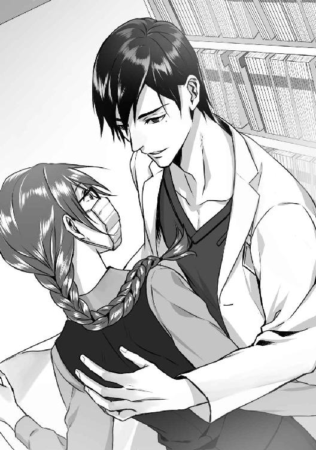
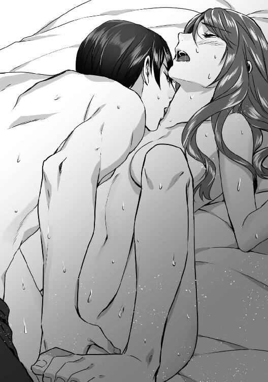
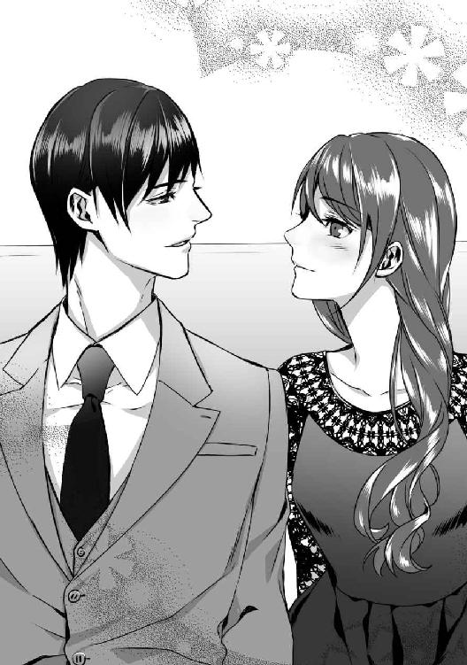

| 眠りの森のドクターは堅物魔女を愛に堕とす (LUNA文庫) | |
| 華藤 りえ | |
| 天海社／LUNA文庫 (2018) | |
眠りの森のドクターは堅物魔女を愛に堕とす
[著者]華藤りえ
[イラスト]園見亜季
０．塚森病院の魔女は
塚森病院のカルテ倉庫には、魔女と呼ばれる事務員が居る。
女性らしさ皆無の黒縁眼鏡に、顔の下半分を隠す大きなマスク。
背の中ほどまである髪は栗色だが、しめ縄のようにぎっちりと三つ編みにしているため堅苦しく見える。
常にうつむきがちで、人を避けるように早足で病棟を移動する。あいさつの声も小さい。
そのため、勤務する医師や看護師はもちろん、同僚の事務員たちすらも、彼女の顔どころか名前だって忘れがちだ。
魔女の名前は烏丸朱理。もうすぐ二十六歳になる彼女の一日は、誰よりも早く出勤し、タイムカードを押すことから始まる。
１．カルテの森で眠れるドクターと出会うが
四月に入っても、朝は肌寒い。それが田舎の山間部であればなおのこと。
烏丸朱理は誰も居ない女子更衣室で手早く着替え、両腕を擦りながら鏡を見る。
感情の起伏が薄い愛想のない顔。髪と同じ栗色の目は、静かで冷たい光を宿している。
柔らかい輪郭や色白な肌や全体的に小ぶりな唇と鼻は、美人と言われた祖母に似ているらしいが、朱理は自分の顔が好きではない。
しかめっ面をしたあとで、黒縁眼鏡とマスクを着けて服装を確認する。
プリーツの入った紺色のボックススカートに同色のベスト。没個性の事務制服。
スカイブルーのポリエステルブラウスは、てかりが安っぽい、寒い、下着が透けやすい。と若い女子職員から不評である。
だが、業務中に人と接しない朱理にとってはどうでもよいことだ。
いや、業務外でも他人と顔を合わせたくない。
お弁当が入っているビジネスバッグを片手に、朝七時前の病院本館を移動する。
早朝かつ外来診療時間前とあって、建物に人の気配はない。
時折、入院病棟の方で、食事の準備をする調理職員や、巡回する看護師を見かけるだけで、朱理が所属する事務部のある本館はしんとしている。
タイムカードを押して本館を抜け、裏手に回る。
病棟群のある表側から離れると、すぐ林や池などの自然を生かした裏庭になる。
地域医療支援かつ大学の外部機関として建てられたため、この病院は他と比較して敷地も広く、設備も多い。
病床数は百四十そこそこだが、建物として独立した図書館や、地元の温泉を利用した湯治とその効能を研究する施設。実験棟もある。
昭和一桁の頃から続く病院で、近年は老朽化から次々に新しく施設を建て替え、見た目もきれいになったが、唯一、古いまま残された建物がある。
旧隔離病棟。通称、旧棟。朱理の仕事場だ。
重くてきしむ鉄のドアを全身で押し開け、深緑色のビニールが張られた廊下を歩く。
創設当時は清潔で真っ白だっただろう壁はくすみ、消火器の案内パネルは半分はがれている。
一階にある昔の診察室は、すべて不要品置き場となっていて雑然とした印象だ。
朱理は、見捨てられた物品が詰まる部屋の横を通り抜け、コンクリートの階段を上がっていく。
二階に入るとすぐに、カルテ庫と書かれてある黒い板と引き戸が見え、正面で立ち止まる。
一瞬ためらい、朱理はそろそろと扉を開けて中を窺う。
天井から床まである移動式書棚が、視界一杯に広がる。
部屋を占める棚の中身は、手書きされた古いカルテだ。
朱理の仕事は、ここにある、いつ、誰が使うとも知れない、黄ばんだ紙のカルテを解読し、電子カルテシステムや、図書館の資料データベースに登録することだった。
大学卒業後に就職した貿易会社が、たった二年で倒産し、再就職もうまく行かず地元に戻ってきた朱理は、薬局を営む両親の紹介で塚森病院の職員となった。
しかし、人の顔を見るのが苦手なため、あらゆる部署で使いづらいと手を焼かれ、最終的にたどり着いたのが医療情報部文書管理係。
定年退職間際の係長と、高校生の息子が居る事務の女性が一人。あとは朱理という三人だけの小さな部署である。
他人からすれば屈辱的な配属、窓際と言われる部署だが文句はない。
もともと、人と顔を合わせて話すのが苦手なので、電話対応とデータ入力しかない今の仕事は気に入っている。
ただ――。
（また、居る......）
カルテの森を形作る移動式書庫の間から、そうっと奥を伺っていた朱理は、ある人影を見つけてため息をつく。
窓際に配置された古ぼけた平面ソファ。その上に一人の男が眠っていた。
できれば迂回したいが、いかんせんソファが置いてある場所が悪い。
ソファは、朱理が仕事で使っているデスクから二メートルほど離れた位置にあり、どんなルートを通っても避けられない。
起こして声をかけられるのは面倒なので、相手が目覚めないことを祈りながら近づいていく。
緊張のせいか鼓動が騒がしい。
「ん......」
男の横に差しかかった時、小さく呻かれ、座面から床に向かって力なく落ちていた腕がわずかに動く。
（起きた......？）
ぎくりとして歩みを止め、相手を伺う。
すっきりとした鼻筋と、無駄がないシャープな輪郭が朝の光に浮き立つ。まるで大理石像のようにきれいな肌と、そこに形よく収まる唇と眉。
切れ長の目は、意志の強さを表すように端の方で少し上がっており、まつげだって女性がうらやみそうなほど伸びている。
艶やかな黒髪は少し長めだが見苦しくはない。さらりとした髪質のせいか、清潔で理知的な印象が顔とよく合っていた。
ソファからはみ出し床にたれる白衣の裾と、ネイビーカラーのスクラブ。駄目押しに医療ＩＤカードを見れば、相手が医師だとすぐわかる。
――神野彬。今年の二月に大学から異動してきた心臓血管外科医だ。
折しもバレンタインデー目前。突然、降って湧いてきたイケメンに、この病院で働く女性たちは大騒ぎした。
いつも穏やかで、時には患者を笑わせたり、スタッフに冗談を言ったりする爽やか系。
外見もさることながら、三十五歳で専門医資格を複数保有し、さらに大学の元講師で将来有望とくれば、皆が色めき立つ。
毎日のように、更衣室で神野に関する情報交換にいそしむ同僚女性らの声は大きく、恋愛に興味がない朱理ですら、彼のプロフィールを覚えてしまった。
塚森病院は、周辺の町や村では大きいが、都心部にある大学医学部と比べれば、しょせん、田舎の病院である。
院内どころか近隣にコンビニもなく、おしゃれなカフェやレストランはもっと遠い。
そんな場所に、才能があってイケメンな男性医師が来ればどうなるか。いわずもがなである。
色めき立つ周囲をよそに、朱理は、騒ぎも神野も無視するようにしていた。
......のだが、なんの因果か、三月の始め頃から彼はこのカルテ庫に現れ、こともあろうに昼寝場所として利用しだした。
あまり外来を担当しない病棟勤務とはいえ、急変率も高い心臓血管外科の医師がサボりでカルテ庫はないだろう。
ついでに言えば、ほこりっぽいカルテ庫などではなく、医療従事者用に用意されている仮眠室のベッドか、自分の医局で寝てくださいと言いたい。切実に言いたい。
だが、今日も朱理は言葉をのみ込む。
神野と会話をしたくない。もちろん、彼から話しかけられたことは一度ない。ついでに言えば、彼自身がどうこうというわけでもない。
ただ単に、朱理が誰の興味も引きたくないだけだ。
うっかり神野と会話し、彼が面白がって、朱理のことを他の場所で話題にするなどされてはたまらない。
それに彼がこのカルテ庫に入り浸っていることを、事務部の女性陣に知られれば、朱理に関する、不名誉なあのうわさがどこから持ち出されるか。
（それだけは避けなきゃ）
過去に引っ張られそうな意識を、首を振って拒絶し、一歩を踏み出す。
幸いにも神野は朱理の気配に気づくことなく、穏やかな寝息をたてていた。
デスクにたどり着いた朱理は、パソコンとスキャナーのスイッチを入れ、起動するまでの間にバッグから取り出したペットボトルのお茶を飲む。
「よし」
小さな声で気合いを入れ、ストックしてあるカルテを手に取る。
キーボードを打つ音とスキャナーの読み込み音が、朝早いカルテ庫に響く。
徐々に仕事に没頭し、真剣になっていく朱理の横顔を、薄く目を開けた神野がひそかに見つめているなど、気づくよしもなかった。
先週まで満開だった桜が、もう葉桜になっていた。
旧棟がある裏庭で、家族とささやかな花見を楽しむ入院患者も落ち着きだし、カルテ庫は相変わらずの静けさに包まれていた。
臨床研究棟で論文を書いている医師に頼まれ、感染症患者の古いカルテとデータを届けに行っていた朱理は、カルテ庫に戻り声を出す。
「居ない......」
朱理が仕事に熱中している間に音も立てず現れ、ソファで寝ていた神野が消えている。
春うららの日差しの中、胸の上で両手を組んで横になっていたが、今や影も形もない。
「眠り姫も、病棟の呼び出しには逆らえないってことね」
マスクの内側で唇をほころばす。
神野がカルテ庫に現れてから一ヶ月。
最初の二週間は警戒し、仕事に打ち込むことで話しかけられないようにしていたが、最近ではあまり気にならなくなっていた。
なぜなら、神野は週に二度か三度の割合でふらりと現れ、ただ眠るだけなのだ。
たまに起きていることもあるが、ぼんやり外を眺めているばかりで、こちらに話しかけることはない。
会話しなければ空気と同じだと思いつつ、朱理は彼に興味を抱き始めている自分を持て余していた。
仮眠室でも医局でも、快適に寝られる場所はいくらでもあるだろうに、わざわざ病棟から離れた、旧棟のカルテ庫に来るのが不思議だ。
着任してまだ二ヶ月。人間関係に気を使わなければならないはずなのに、こんな処で何時間も昼寝してサボっていいのかと、人ごとながら心配してしまう。
家族や身内以外に対する興味が極端に少ない朱理にしては、珍しいことだ。
移動式書棚の間から、ソファを見つめて目を細める。そうすると神野が眠っている姿が記憶からうっすらとよみがえる。
白い額にかかる黒髪、薄く開いた唇。寝ていても端正な容貌。
涼しげな目元には、小さなほくろが一つ。
眠り姫とあだ名をつけてしまった自分がおかしくて、ついほほ笑んでいると、不意に声をかけられた。
「かわいいな。そんな顔で俺を探してくれるわけだ」
はっとして振り向こうとするが、驚きに足がもつれてよろめく。
書棚に背中を打ち付けると目を閉じた瞬間、大きな手が背中を支えた。

白衣の裾がひるがえり、黒い前髪がわずかに揺れる。
思ったより高い相手の身長にどぎまぎしていると、眠り姫――神野が目を和ませた。
「こんにちは、カルテ庫の魔女さん。......眠り姫って俺のことか」
喉を鳴らす神野から尋ねられ、頭に血が上っていく。
独り言を聞かれていた。しかも勝手に『姫』呼ばわりしていたことまで知られたなど、恥ずかしくてたまらない。
（カルテ庫の魔女って、私のあだ名も知られていたなんて）
眼鏡とマスクで顔の大部分を隠し、年齢不詳でカルテ庫にこもっていることから、病院内で、朱理が『カルテ庫の魔女』と呼ばれているのは、時折、耳にして知っていた。
けれど、正面を切って、あだ名を口にした人は神野が初めてだ。
視線を合わせられないままうつむいていると、背中にまとめていた三つ編みが肩を滑って前に落ちてくる。
取りあえず、かばってもらったお礼と、相手への謝罪はしなければ。
「支えて下さってありがとうございます。そして、ごめんなさい。勝手に変な呼び方をして」
「別に。面白いと思っただけで、謝られるようなことじゃない」
背中を支える手のひらに力がこもり、身体がわずかに神野の方へ引き寄せられる。
服越しに感じる男の熱と手の感触に、心臓が跳ねた。
慣れない異性との接触に驚き朱理が顔を上がると、顔をのぞき込む神野が見えた。
ネイビーカラーのスクラブからくっきりと見える鎖骨が男っぽくて、慣れぬ色気にあてられた朱理は落ち着けない。
あ、と声をあげて身をよじると、尻になにかが当たり跳ね、ついで買い物袋のかさついた音が響く。
「ああ。すまない。近すぎたな」
両手を突っ張り逃れようとした途端、神野の手がぬくもりだけを残して遠のいていく。
身体が離れる一瞬、爽やかなマリン系のコロンと医療用アルコールが混じった香りが漂い、心拍数を早める。
逃げたくて、でも逃げられなくて朱理が挙動不審になりかけていると、神野は背中を支えていた方の手首を目の高さまで持ち上げた。
「喉が渇いたから買ってきた。魔女さんもどうぞ」
半透明の袋から、中に入っているペットボトル飲料を取り差しだされる。
春限定の桜フレーバーがついたミルクティーは、最近、朱理がお気に入りにしている銘柄のものだ。
「いいえ、結構です」
「そう言わずに。サボりの口止め料とでも思ってくれ」
くすくすと笑いながら朱理の横をすり抜け、袋から出した飲料を一本デスクに置くと、神野はいつものソファに戻り、もう一本のキャップを開けた。
それっきり、朱理など見えないし居ないといったそぶりで窓から外を眺めつつ、神野はミルクティーを飲みだす。
湿っぽく、電灯だってつり下げ式の蛍光灯しかない書庫から、明るい春の庭をまぶしげに見つめては、ペットボトルを仰ぎ喉を鳴らす。そのたびに中身が大きく減るのが、男の人らしくてどきっとする。
落ち着かない心臓をなだめたくて、朱理は胸を手で押さえ、神野に視線を奪われた自分を急いで心から蹴り出す。見とれてどうする。
さあ、仕事だと思ってデスクに着くも、パソコンの横に置いてあるミルクティーが気になって仕方がない。
しかも、隣で神野がおいしそうに飲むものだから、喉の渇きを意識してしまう。
気にするからいけないのだと、入力途中だった、古いカルテの解読に取りかかる。
万年筆で記されたドイツ語の筆記体は難敵で、集中しなければいけないのに、さっぱり頭が働かない。いたずらに数文字打ち込んで、消してということを繰り返していると、ミルクティーを飲み終えた神野がまたソファに寝っ転がる。
「冷たいうちに飲んだ方がいい。じゃ、お休み。魔女さん」
「......おやすみって、あの、ここはそういう場所じゃ」
カルテ庫でサボりは止めて欲しい。
意を決してソファを見ると、神野は既に目を閉じ規則的な呼吸を繰り返していた。
「もう寝てるし......」
お休みと言って二分もたってない。神野の寝付きの早さにあきれればいいのか、注意するまで二分もためらう、自分の優柔不断さを悔やめばいいのか。
肩を下げ、眠る神野をじっと見ていると変におかしくなってきた。
（なんだろう。みんなが話していたイメージと違う。ものすごくマイペースと言うか。猫っぽいと言うか）
クールでそつがなく、上にも下にも頼られる。仕事の指示は的確で、あいまいな所は一つもなく、きっちりとしていると評判だ。
なのにこのカルテ庫ではまるで真逆で、どこまでも自由で、当たり前のように現れ、眠り、消える。
どちらの彼が本当かわからず、少し考えていると、いつの間にか時間が十五分も過ぎていることに気づく。
気分を入れ替えるため、ソファの方を警戒しながらミルクティーに手を伸ばす。
朱理は人と話すことも苦手だが、モノを食べている所を見られるのはもっと苦手だ。はっきり言うと、マスクを外して顔をさらすのが嫌だ。
別にひどい傷痕があるとか、湿疹だらけということではない。
とにかく、人に見せたくない。過去、顔について大きな誤解を受け、傷ついたから。
思わずこぼれた吐息の大きさに、朱理はあわてて神野を盗み見る。――が、彼は相変わらず眠りの森の中に居るようで、ぴくりとも動かない。
安心してキャップを外し、マスクを引き下げ、ミルクティーで喉を潤す。
甘くまろやかな味わいは、苦い過去を消すように朱理の身体に染み入っていった。
初めて神野と言葉を交わしてから、彼がカルテ庫に来る頻度が増えた。
だからと言ってなれなれしく話しかけたりしない。
相変わらず寝て、時折、売店のパンやおにぎりなどの軽食を食べ、外を見て、また眠る。
滞在時間は一時間も居ない時もあれば、朝からずっと居る日もある。
もちろん、来ない時もあって、そういう時はなぜだか寂しい。
一人になれるのがうれしいはずなのに、神野が居ないとなんだか落ち着かない。そういう風に感じるのは、間違っているとわかっているのに。
相手は医師で、窓際事務員の朱理よりずっと多忙なはずだし、別になんの約束もしていない。居心地のいい場所が見つかれば、きっとそっちに落ち着くだろう。
――そうしてまた、朱理は一人、カルテの森に残される。
気まぐれな眠り姫が三日続けて来ないとがっかりし、落ち込む自分に顔をしかめる。
かと思えば、翌日は当たり前のようにソファで寝ている神野の姿を見てほっとする。
初めは怖がっていたのがうそのように、自分の領域であるカルテ庫に、神野という存在が居ることを、朱理は自然に受け入れだしていた。
外科から登録希望が出ていたカルテを書棚から取り出し、デスクに広げる。
端が黄ばんでいる紙カルテの上に、かすれたインクで所見が記されていた。
「あー、これは......」
難儀だ。筆記体に特徴がありすぎて、英語かドイツ語かもわからない。
最初の一文をコピー紙に書き写し、頭からアルファベットをひもときつつ、医学用語辞書をめくる。
「アイ、エム、イー？ イミューナティ？ 免疫......内科関連かしら。でも依頼は外科だし」
当てはまる文字を入れるが、そうなると全体に記されている図や、別の単語とかみ合わない。
人さし指でこめかみを押さえつつ格闘する。外科とまとめて依頼せず、せめて、なんの外科か教えてくれれば、見当もつけやすいのに。
少しだけ不満に思っていると、頭の上から筋ばった手が伸びてきて、ノートパソコンに立てかけられていたカルテを奪い取る。
「これはまた、ミミズが盛大に盆踊りしているな」
「神野先生、困ります」
椅子ごと振り返って苦情を述べる。すると彼は、外から入り込んでくる光にカルテをかざして目を細めていた。
「二文字目はＭじゃなくてＮとＦだな。inferior ――下腰部ヘルニアの疑い。整形外科か。......読み上げるから入力」
「あ......はい！」
眠っている時の静謐さとは違う、研ぎ澄まされた神野の雰囲気にどきりとしつつ、キーボードに指を走らせ、彼が読み上げる内容を打ち込んでいく。
淡々としていながらも、よく通る声だった。
はっきりとした語尾は外科医だからか、神野自身の癖なのか。
「脊椎内視鏡がない時代のカルテなら、手書きも当然だろうが......同僚は困っただろうな。英文とドイツとラテンの単語が入り交じっている」
「え、ラテン語もですか？」
入力が終わり神野を見ると、彼は、苦笑を隠そうともせず腕を組んだ。
「今は電子カルテ入力で、病名表記もルールで決められているから、めったに目にしないが。......ここまでミミズ文字じゃわからないよな。と言うか、この山が全部こいつのか」
「そうです。......今朝、メールで依頼がきて、この十件を今週中にと」
しょんぼりとしてしまう。
神野はパソコンの横に積まれている束を示した指で、腕時計を弾きつつあきれていた。
「今日は金曜日だが」
「......そうです」
残業どころか、休日出勤も覚悟する。
一枚を解読するのに一時間はかかっている。それも神野の助けがあってこそだ。
地道な作業は嫌いじゃないけれど、先が見えなさすぎるのは辛い。
ため息を我慢する朱理の頭上に、神野がぽんと手を置いた。
「よし、次を読み上げるぞ」
子どもにするように、朱理の頭を何度か軽くたたいてから、神野は二件目のカルテに指を伸ばす。
「でも......神野先生にもお仕事が」
「別に。仕事があったら、ここで昼寝していない。ほら、手をどかせ。古くても医療情報なんだ。破れたら、あの、やかましい医情の課長から怒られるぞ」
ううっ......とうなりながら、朱理はカルテと神野を交互に見る。
急に現れた救いの手を取っていいのか、悩ましい。
「神野先生は、その、心臓血管外科医じゃなかったんですか」
担当科が違うことを理由に断ろうとする朱理の声を無視して、神野はカルテを押さえている手をぺちぺちとたたく。
「知ってたのか。だが、この程度のカルテなら研修医でも読める。多分、辞書があれば」
「最後の方、かなり怪しい発言が聞こえました......」
「なめるな。昼寝場所代を支払ってやるから入力しろ。魔女め」
「......魔女じゃなくて、烏丸朱理です」
強引に手伝おうとする神野に、なんとか一矢報いたくてマスクの下で唇をとがらせる。すると彼は目を大きくし、それからとてもうれしそうに笑った。
「朱理」
どきん、と心臓が大きく跳ね、それから身体中の血が熱くなっていく。
男性から初めて名前を呼び捨てにされ、気恥ずかしさに耳まで赤くなりそうだ。
どぎまぎした朱理が肩をすくめ、手が浮いたすきをついて神野がカルテを取り上げる。
「二件目、いくぞ」
（卑怯だと思う......）
うらめしいやら、照れるやらでたまらない。だけど内心を知られるのもむずがゆい。
高まる鼓動と、胸を甘苦しくする感情にどう対処すればいいかわからず、朱理は神野が解読する声通りにキーボードを打ち続けた。
（本当に、定時に終わっちゃった）
更衣室で着替えながら、先ほどの時間を振り返る。
あれから神野は次から次へと、ミミズ文字カルテを解読した。
さすがに温泉療法に関する部分や、高度に専門的な部分は医学辞書を引き、朱理の仕事用ノートパソコンを使い、インターネットで論文などを確認していたが、それでも、予想よりずっと早く仕事が片付いた。
（でも、あれは勘弁して欲しかったな）
今、思い出しても身体が火照る。
朱理のノートパソコンを使用するのはいい。
問題は、使う時に椅子を譲らせるのではなく、背後から朱理を抱くようにしながら、マウス操作や入力をしたことだ。
自分より広い男の胸板を背に感じ、すましていられるはずもない。
なのに神野は、朱理の頭にあごを乗せ、そのまま考え込んだりもしたから、心臓に悪いことこの上なかった。
そもそも朱理は、男性に対する免疫が少ない。
日頃接する男性と言えば、父親か、姉と結婚し婿入りした義兄。あとは叔父ぐらいだ。
恋をしたのも、彼氏が居たのも高校生時代に一度だけ。
相手はサッカー部の女子人気も高い先輩。
告白されてから登下校を一緒にしだし、たまに唇を合わせるだけの軽いキス。
休日は彼の試合を見に行き、帰りはその足でデート。
そこからは進まず、三ヶ月の付き合いで朱理の初恋は終わった。
というのも、その先輩と付き合いだした頃から、不名誉なうわさが周囲で立ち始めたからだ。
『烏丸さん、整形美人なんだって』
とんでもない誤解だった。
当時、父の末弟――つまり朱理の叔父で、形成外科医でもある烏丸尊が、実家に住みつつ近隣都市の病院へ通勤していた。
叔父は、医師としてそこそこの腕らしいが、私生活では忘れ物魔神で、鍵やスマートフォンを忘れるのは毎日。
傘などは、なくすのが当たり前すぎて、ビニール傘以外を買うなと、父や亡くなった祖父から怒られてしまうほど。
大体は誰かが届けることになるのだが、薬局で働く両親と、その手伝いで外回り営業をする姉に時間はなく、必然として高校生の朱理に託された。
誤解の発端となったのは、叔父の尊が勤務する病院の中に、美容外科もあったことだ。
朱理が叔父の病院へ度々出入りするのを見た同級生らが、面白半分に整形美人とうそを言いふらし、事実のように語られるまで時間はかからなかった。
未成年が美容整形を受けるには親の同意がいる。とか、そもそも叔父が形成外科医で、その病院で仕事しているからと説明しても、みんなが言い訳としか捕らえなかった。
ちょうど、朱理の外見が女の子から女性へと変貌しだす頃だったのもいけない。
気にしない。うわさだと言ってくれた彼氏も、ことあるごとに周囲から、お前の彼女は整形美人だとからかわれ、やがて会わなくなり――受験を期に終わった。
地元から離れれば大丈夫だと思い、大学は東京へ進学したが、心ないうわさによってつられた劣等感はなかなか消えない。
とどめに、就職した会社はいわゆるブラックで、罵倒と残業の日々に、ますます後ろ向きな性格になり、会社の倒産を機に地元へ戻ってくれと、心配した母に泣きつかれるほど。
うわさが嫌で逃げ出したのに、結局はこうして顔を隠し、息を潜めたまま地元で生きている。
そんな中、神野彬のように誰からも一目置かれる、才能や社会的地位に外見までも恵まれた男性が現れ、人種が違う。関わるまい。そう考えて警戒していたのに、今日だけで随分と距離を縮められてしまった。
（神野先生は人気があるから、女の子慣れしていて、あれが普通の距離かもしれないけど）
どうかすると先走りそうになる思いを戒める。勘違いなんてしない。
好きになんてならない。あれは本人も言っていたように、サボっていることの口止め料と昼寝ソファの場所代だ。
（あれ？ だったら、どうして神野先生は病棟から離れた、旧棟のカルテ庫なんかでサボるんだろう）
院内であれば見つかるからと予測はつくが、他にも図書館や研究棟がある。
寄りによって、旧時代の設備しかないカルテ庫に来る必要はない。
人間関係に問題があるタイプかと言えば、そうでないのは今日の態度で理解できた。
ならどうしてか。だんだん気になってくる。
首をひねっていると、入り口から、かしましい女性の声が聞こえた。
同じ事務部の女性陣だ。
「歩美もがんばるねー。神野先生の出勤時間を狙って郵便局に行くなんてさ」
聞こえた内容に、ブラウスのボタンを外す指が止まる。
「そう。出勤時間を狙って待ち伏せ」
「ストーカーか......って言いたいけど、それを言ったら、心臓血管外科病棟に居る看護師のあの子が上手だよね」
ロッカーを開く音や、着替えをする物音が重なる。
相手は三人組のようで、相づちを打つ端から質問が飛ぶ。
「聞いた聞いた。神野先生が泊まりの時だけめちゃくちゃ真面目で、オーダーがあるとすぐ動くって。心外部長にも甘ったれだったのにね」
「なにかと医局に入っては、教えてください神野せんせぇーって。まだ二年目だしぃって......で、教えたらお礼に食事でも......とか？」
「そうそう。それで神野先生の返事が、『教えたら飯をおごるとか言うのは、今日は君で三人目だが、ここの女性看護師の伝統かなにかか？』だってさ。機会があったら俺がおごるから、またね。なんて当たらず障らずで、軽くあしらわれたみたい。スマートに逃げる手口からして、もう相当に場数を踏んでるっぽい」
聞くのは失礼だ。と思いながら、なるほどとうなる。
神野がカルテ庫に来る事情を理解した。
仮眠室や医局では休ませてもらえないほど、おモテてになっていらっしゃるようだ。
ますます盛り上がる声に紛れさせつつため息を吐き、朱理は気配を隠しながら着替える。
しかし彼女らは、朱理がいるとも気づかず、身ぶりを加えながら盛り上がっていた。
「もうかっこいいやら、憎いやらだよね。勤務シフト見て出待ちする、歩美の気持ちがわかるわ」
「あたしらは医療従事者と違って、ドクターと一緒に仕事しないし。医事課や医療資材課ならまだしも、ただの事務じゃねえ。接点ないっつーの」
歩美と呼ばれていた女性が、リップグロスを塗り直している。ショートカットにきりっとした顔立ちの美人で、スタイルもいい。
（あんなにきれいな人でも相手にされないんだ。......あ、でも私も相手をしてなかったから、同じか）
つまり、職場では面倒を避けたい系。
納得しながら、更衣室を出て職員通用口を抜けて駐車場へ向かう。
朱理は徒歩通勤だが、駐車場裏口からの方が家に近いし、道も明るく安全だ。
トートバッグを探りながら眼鏡ケースを出そうとするも、なかなか手に触れない。
財布、お弁当とスマートフォン。ポーチなどで分類して入っているのに。
首をかしげていると、駐車場に止まっていた一台の車から、小さい子どもが飛び出して走ってくる。
「あか姉ちゃん！」
ふわふわの癖っ毛を左右に結んだ幼稚園児の姪と、生意気盛りな小学二年生の甥っ子だった。
あわてて眼鏡を外してカバンの中に落とし込む。
傷つくかもしれないが、どうせ千円で買ったプラスチック製の伊達だ。それより職場で眼鏡を掛けていることを、家族に知られるのが嫌だ。変に心配させてしまう。
脚や腰に抱きつく甥と姪の頭をなで、マスクを外して笑いかける。
「駐車場は危ないから、走っちゃ駄目って言ってるでしょ？」
「朱理が遅いから！ もー、尊と待ってたのに」
「......尊って、尊さんは大叔父さんでしょ？ 呼び捨てにしないの」
「じゃあ、朱理も叔母ちゃんって呼ぶけどいいの？ おばさん、朱理」
まだ二十代でその呼び方は勘弁して欲しいな。と苦笑すれば、二人を追って、ゆっくりとこちらへ来る大柄な男性が居た。叔父の尊だ。
「尊叔父さん。二人を走らせないでください。私がお姉ちゃんに怒られちゃう」
「あ、忘れてた」
短く切った髪をかきながら、垂れ目の顔で笑い飛ばされる。仕事中はなんでも覚えているのに、職場を離れるとぼんやりした熊モドキになってしまう。
「尊が忘れやすいから、朱理と一緒に買い物行けって、ばーちゃんが」
甥っ子の和也がくしゃくしゃになったメモを差しだしてくる。姪も、お魚見るの！ と楽しげだ。
「うわっ、結構あるじゃない。洗剤と野菜、合いひき肉にきびなご......っと。私が残業だったら、どうしたんですか」
「朱理ちゃんのスマホにメールを入れてたんだけど。まだ見てない？」
「あー、今日、忙しかったから......」
神野に絡まれどきどきし通しで、ついチェックを忘れたとは言えない。
それに、忙しかったのも間違いではない。
「まあ買えなかったら、おかずが減って二人がギャン泣きするだけだけどねえ」
「それ、笑えませんってば。叔父さんが相手します？」
軽々と姪を抱き上げた尊が、肩をすくめて勘弁してよと返す。
彼は、なにかと時間に都合をつては実家に戻ってくる。本人は、家事をしなくていいし、外食は飽きるからと言うが、本音は腰を痛めた祖母と朱理らを心配しているのだろう。
眼鏡を確認し、ハンカチで保護しようとするも、和也に手を引っ張られて諦める。今は家族の夕飯だ。
総勢九人の晩ごはんとなると、台所はちょっとした戦場になる。
よし、と気合いを入れ、仕事の時は誰にも見せない笑顔が浮かべ、朱理は歩きだしていた。
２．魔女の呪いはキスでは解けず
暖かい春の日差しも夕焼けに変わり、室内を通る風も少し冷えだしていた。
この分では、夜に小雨が降るかもしれないなと思いつつ、朱理はパソコンの電源とスキャナーのスイッチを切る。
残っていたペットボトルのお茶を飲み終え、バッグにしまって十分。
諦めて回転椅子をソファの方へ向け、頭の後ろで手を組み、くるぶしを軽く交差させた格好で寝転がっている神野を見た。
待合室用の二メートル近く幅があるソファなのに、神野が横になると小さく感じる。彼の身長が高いせいだろう。
「神野先生、いい加減に起きてください。私、帰ります」
以前はうるさくなかったが、最近は無駄に残業していると怒られる。
経費削減とか効率化がどうとか言う話だが、理由もなくカルテ庫に残れない。
「今日はおじいちゃんの守衛さんが当番の日だから、寝ていると中に閉じ込められちゃいますよ」
めっきり耳も目も弱くなった守衛は、暗く静かなカルテ庫の中がよくわからないらしく、たまに朱理に気づかず鍵をかけたりする。
中で仕事し、物音を立てていてもそうなのだから、寝ているともっと危ない。
昭和より前の時代に建てられた隔離病棟を流用しているので、この部屋は、中から鍵を開け閉めできないようになっていた。
一階なら窓を通って外に出られるが、二階フロアに置かれたカルテ庫の窓は、医療情報を盗まれないように鉄格子になっている。
閉じ込められたら最後、外に電話して、誰かに開けて貰わなければならない。
「神野先生」
困り果て、彼の側に行き声をかける。
......これはすねている。
最近は、飛ばし飛ばしにしか来なかったが、来ると必ず朱理の仕事を適度に手伝い、わからない部分も教えてくれた。
三日前は、どうした流れでか食事に誘われ、朱理はときめく胸を押し殺しつつ断った。
誰かが神野に誘われたとなれば、女子更衣室は蜂の巣を突いたような騒ぎになるだろう。
朱理ではなく看護師でも誘ってあげればと思うったが、黙って頭を横に振った。
が、相手は諦めず、今日も食事に誘ってきた。
職場の人と外食する気はありませんと伝えてすぐ、神野は拗ねたように昼寝しだした。
最初はそれでも構わなかったが、帰る時間になっても動く気配のない神野に焦りながら仕事を続け、ついにこの状況だ。声をかけないどころか起きてもくれない。
「起きてください。病棟に戻らなくていいんですか。当直とか夜勤じゃないんですか」
「仕事があるのに女性を食事に誘ったりはしない。残念ながら、俺は明日の朝まで休みだ」
目を閉じたまま、淡々と返され絶句する。
休みなら、カルテ庫ではなく家で寝ればいいのに。
考えたことをそのまま伝えると、神野は臆面もなく告げた。
「眠り姫は目覚めのキスを待っている」
朱理がつけた失礼なあだ名をダシにして、神野が笑い薄目を開く。
「そのあだ名を気にしないと、先生は言われました。それと、魔女は姫にキスしません」
マスクの内側で唇をとがらせ反論する。からかわれたのも恥ずかしいが、神野の態度もどうかと思う。食事なら朱理以外を誘えばいい。
ショートカットな美人――歩美と呼ばれた事務員や、看護師など、喜んで誘われるだろうし、楽しく会話できるだろう。
そもそも朱理は、忘年会と送迎会ぐらいしか出席しない。
出てもうつむいて食事するばかりで、誰と隣り合っても、黙ってうなずく間に会話が途切れ、みんな去って行く。
恋愛どころか、人付き合いをする気が皆無の堅物だと、病院内で知れ渡っている。
「俺は、朱理にキスされるのを待っている」
名前の部分と、キスの単語を強調され、冗談だとわかっているのに胸が騒ぐ。
神野のようななんでも持っている、人から羨ましがられる光の世界に生きる人には、もっときれいで、華々しいバラのような女性が似合っている。
隠花植物のような朱理を本気で誘うはずはない。朱理はゆっくりと呼吸を繰り返すことで、平静を保つ。
「冗談で口説かないでください。暇つぶしをするなら」
「片手間に女を口説くほど、不誠実な生き方を俺はしていない」
気づいた時には息を呑んでいた。これ以上、深入りすれば戻れなくなるとわかるのに、どうしたって足が動かない。
逃げなくてはいけない。けれど眠っている神野の側から離れられず迷う。
「朱理」
普段は名前すら呼ばないのに、せかすように、また朱理と呼ばれる。
熱っぽさを思わせる低い響きに、服の下で肌がざわめきだす。
山の端で輝きを放っていた太陽が、半分ほど姿を消していた。
カルテ庫が赤い色に染めあげられた瞬間、神野の腕が動き朱理の手首をつかむ。
あっ、と声を上げた時には腰に腕を回し抱き寄せられていた。
そのまま世界が回転し、ソファに押し倒されてしまう。
つい先ほどまで寝ていた神野が椅子の端に腰掛け、上から朱理の肩を押さえている。
神野が来ている長白衣が、さらりと膝下を滑る。
清潔できちんとクリーニングされた裾の、少し固い感触がストッキング越しに肌へ伝わり、突如、胸が甘苦しさに満たされた。
不可解な気持ちで彼を見ると、黒曜石のような瞳に夕日の赤が反射していた。
妖しくも美しいまなざしに、朱理は呼吸を忘れ見入っていたが、すぐに状況を思い出しみじろぎする。
肩を押す神野の手にはさほど力が入ってない。なのに的確に関節を押さえられているのか、どうあがいても起き上がれずにいた。
心臓がどくっどくっと鼓動するごとに、血管までもが脈動し、全身を熱くさせていく。
人は混乱しすぎた時には大きな声をだせないのだなと、変なことに気づきながら浅く息を継ぐ。
気を取り戻そうと、声なくあえいでいると、神野が一瞬だけ切なそうに眉間にしわ寄せ、それから、ぐっと上体を倒し顔を寄せた。
肩を押さえていた手が離れ、輪郭に触れそうで触れない位置を指先がかすめだす。
恥ずかしさと、理由のわからないうずきが胸に沸き起こる。
朱理がつい目を閉ざすと、耳の外側をくすぐっていた彼の指が、マスクをとめるゴム部分に引っ掛けられた。
「やっ......、やだっ！ 取らない、で」
あわてて声を上げた時には、もうマスクが奪われていた。
久しぶりに家族以外に至近距離で顔をさらし、恥ずかしさに語尾が震えかける。
それでも意地を張って抵抗していると、上から傲然と尋ねられてしまう。
「食事に誘っても断られるのは、このマスクのせいか」
「神野先生には関係がありませ......あっ！」
手にしたマスクを放り投げられ、返す手であごをとらわれる。
強引さに、恐怖より興奮を覚える自分が信じられない。
そのまま右、左と軽く首をねじられ横顔を観察され、泣きたくなった。
どうして顔を見るのかと、劣等感がじわりと心を毒していく。
「俺はきれいだし、かわいいと思っている。......そんなに嫌いなのか、自分の顔が」
「う......」
嫌いか、と聞かれて素直にうなずければ、どんなに楽だっただろう。
過去が胸を詰まらせ、朱理の目が潤み始める。
祖母に似た小ぶりの鼻や口元、母や姉とそっくりの大きな目。父譲りの栗毛も悪くない。ただ、顔をさらすことが苦手なだけだ。
整形美人とうわさをされた高校は、この病院と離れているが、未成年と違い、車で通勤してくるのが大半の職員に、朱理を知る人間がいる確率は高い。
目立って、また同じように言われると――両親や、叔父の尊がかわいそうだ。
彼らは、明るく振る舞い、うわさを笑い飛ばす裏で、落ち込む朱理を心配していた。
だから朱理も、家では、あれは思春期のことだからと苦笑し、話題を避けていた。
彼氏が居ないのも、朝早い出勤も、仕事が忙しいから。マスクはほこりっぽい書庫作業だからとごまかして、仕事場の姿はみじんも見せないようにしていた。
嫌いだと言えば、家族が傷つくのがわかっているから、朱理は口ごもる。
「それとも、俺が嫌いか。......だから笑顔を見せてくれないのか？ 君を迎えにくるあの男には見せるのに」
親指であごをなでながら、少しだけ悔しげな口ぶりで尋ねられ、疑問が起こる。
朱理を迎えに来る男性なんて居ないのに、神野は勘違いしているのだろうかと思い、ふと気づく。
月に数度、甥と姪を連れて叔父が迎えに来る。きっとその様子を見られたのだろう。
「尊さんのことですか？ 彼は......家族です。あの、それより......見ないでもらえますか」
自由になった左手で神野の指を離し、顔の下半分を多い隠す。
音が聞こえそうなほど心臓が騒がしい。顔だって真っ赤だ。
多分、神野にとって特別な意味はない。叔父には笑いかけながら、自分にこびない朱理が男として面白くないだけ。
神野が、朱理を好きになる理由がない。
昼寝場所としたカルテ庫で仕事をしている、眼鏡とマスクで顔を隠す変な女。
会話もお互いを知るほど親しくした覚えはないし、これと言う取りえもない。
彼の行動など、退屈しのぎ。ただのちょっかい。
わかっていても、気持ちが落ち着かせられず困る。
肩を狭め、涙に潤んだ目で神野をにらみつけていると、彼は熟れた吐息をこぼし、朱理の手の甲を自分の手で覆う。
「朱理」
大切な人のように呼ばれ、きゅうっと胸の奥が締め付けられる。
勘違いしてしまいそうだから止めて欲しいのに、うまく息が継げない。
うそだ、そんなことはない。遊びだとわかっていても近づく彼の顔を拒めない。
手の甲を指の腹でくすぐられると、途端に腕の力が抜けていく。
もう一度、名を呼ばれ、そっと腕を取り覆いかぶさられ――互いの唇が合わさった。
試すようにそっと触れ、すぐしっかりと重ねられる。
やがて、固く閉ざされた唇をなだめるように、神野の舌先が優しく表面をなぞりだす。
「んっ......ぁ......、ふ」
呼吸ができない苦しさに声を漏らすと、はあっと神野の吐息が喉元へ落ちた。
肌をかすめる男の熱い息に、身体がわななく。
反応を伺うようにまたキスされ、湿った音が耳に届きだす。
「たまらないな。キスをするとこんなに可愛くて、きれいな表情をするのに。どうして隠す。――うわさのせいか」
とろけ、恍惚としだした身体に、冷水を浴びせられた気がした。
青ざめて身を強ばらせると、感づいた神野が身体を離す。
「朱理？」
神野の胸を押す指が、おびえ震えていた。
彼は身体を起こし、すぐ朱理に手を差し伸べる。
白衣につつまれたしなやかな腕を払い、顔を手で隠しながらうつむく。
「うわさって......なんですか」
「悪い内容じゃない。いつも顔を隠しているから年齢がわからないとか、顔を見たやつがいないとか。誰にもなびかないとか......たわいもないことだ」
言葉を選びながら巧みにごまかされている気がした。患者を相手に病気をどう告げるか計算し、傷つけないように仕組むやりかたと同じだと気づき、かっとなって立ち上がる。
「それで、神野先生はご自身ならなびかせられると、魔女退治のつもりでここに来ているんですか？」
「......違う」
間の抜けた沈黙は、朱理にとって肯定も同然だった。
心を引かれていたのがバカみたいだ。好きになる直前に気づけてよかったと思う。
唇をかみ、神野の視線を遮るように背を向ける形でデスクに移動する。
カバンを取り、急いで出したハンカチで口元を押さえた。
キスの感触を消したい。彼の熱も、柔らかさも、蕩けるような愛撫さえ、恋じゃないならいらないと擦る。
「朱理、待て」
「待ちません。――遊びで誘惑するつもりなら諦めてください。迷惑です。ここは私の仕事場なんです」
木々のように立ちそびえるカルテの棚を目で眺め、最後に神野をにらみつけて後ずさる。そして、一定の距離を置いたあとで朱理は走りだした。
３．嵐の夜に愛を知り、恋に目覚め
午後から降りだした雨が勢いを増している。
夜も遅く、消灯時間を過ぎている病院は真っ暗だ。
ざあっとなるのが雨音なのか、裏庭の木立が揺れる音かもわからない悪天候。
カルテ庫のソファで仰向けになったまま、神野彬はため息をつき目を閉ざす。
先ほどまで聞こえていた、キーボードの軽い音が途切れた。
スキャナーが立てる機械の囁きも消え、朱理が電源を落としたなと思う。
彼女から名前を伝えられ、仕事を手伝い、やっと一歩進んだと浮かれていた。
なのに、彼女が忘れた眼鏡ケースを届けようと追いかけ、駐車場で朱理が男――別病院に勤務する、形成外科医の烏丸尊といるのを見て、神野は通用口で立ちすくんだ。
眼鏡もマスクも外した素顔で幼い子をいなし、楽しそうに語りかけ、屈託なく笑う姿に心を奪われ、すぐ、盗み見ることしか許されない自分の距離にじれた。
カルテ庫を訪れたのは、ほんの出来心だった。
医局の歓迎会で、旧棟という建物があると聞き、そこにあるカルテの森には、堅物で男嫌いの魔女がおり、口説くと呪われ当直が続くという話をされた。
病院にはこの手の与太話がいくつかあるが、幽霊ではなく魔女という所が面白い。
そう思い、興味を引かれ勤務明けに訪れ、そのまま昼寝し目覚めると、黙々とカルテを入力するマスク姿の女性事務員が見え、気が抜けたのは覚えている。
ばか話のオチなどこんなものだと思ったが、今更、寝たふりをやめて相手を驚かせ、仕事の邪魔をするのは悪く、胸の内だけで苦笑し......そのまま昼寝を続けた。
ふと物音がして目を覚ますと、カルテ庫の魔女とやらが弁当を机に広げていた。
彼女は用心深い小動物のように、神野の様子を窺いながらマスクを外す。
あまりクリアでない薄目で見ても、十分に愛らしい顔立ちだった。
やぼったい黒縁眼鏡をはずせばモテるだろうにと他人の気楽さで考え、次の瞬間に驚く。
ふたを外した瞬間に彼女が見せた無防備なほほ笑みが、とても幸せそうだったからだ。
早春の日差しの中、詰められた家庭的なおかずを少しずつ唇に運ぶ様子や、おいしそうに目を細める姿を、ずっと視線で追っていた。
最後に残していた卵焼きを口に放り込んだ時など、いっそう愛らしくて仕方がない。
――なんだ、魔女の癖に癒やし系か。
彼女が空になった弁当容器を手に席を外したすきに、神野はカルテ庫を抜け出し、引っ越したばかりのマンションに帰宅した。
次の日も、思い出して口元がほころぶほど、朱理の表情に心が癒やされていた。
それから、疲れたり気が重いことがあったりしたあとは、カルテ庫に行った。
当然、勤務時間外や休憩中だ。
少しずつ距離が縮むに従って、休日までカルテ庫に居着いてしまうほどになり、自分がこれほどつたない恋をするなんてと、内心で苦笑しだすのに時間はかからない。
最初は、捨てられた子猫や巣から落ちたひな鳥を見守り、必要な時に手を差し伸べるような感情を抱いていたが、すぐ朱理の性格に魅せられていった。
文書管理係という医療情報部の窓際仕事なのに、真剣にカルテと向き合い、解読しようとするひたむきなまなざしや、キーボードを打つ穏やかで丁寧なリズム。
ふてくされず淡々と自分の仕事をこなし、神野が見ていてもいなくてもスタイルを変えない姿は、清廉で――とても美しい。
男の気を引こうと、演技や色気、その場限りの真面目さでアピールする女性ばかり見てきた神野にとって、朱理の、誰も意識しない、故に無防備で自然なしぐさや表情は、とても新鮮だった。
自分のことをこっそり探し、眠り姫と呼んでいるのを目の当たりにした時は、怒るより、朱理がそんな茶目っ気を持っていることが可愛くて、つい抱きしめたくなったほどだ。
朱理に対する想いは日に日に募ったが、恋心を告げれば逃げ出しそうな様子もあり、相手との距離を推し量り続けていた。
そんな中、マスクや眼鏡を外し、他の男に笑顔を見せる朱理を偶然にも見てしまい、焦れた。
相手が朱理の叔父で――神野にとっては同大学の先輩に当たる医師だと、知っても気持ちが落ち着けない。
どうしても朱理のプライベートな表情を見たくて、食事に誘った。
もっと時間を掛けるべきだったのに。
彼女の中に自分の居場所があるのか、いつかはあの男に見せるような笑顔を向けてくれるのか。それ以上のものが、特別ななにかが得られるのかと恋を乞い、誘いを断られ手を焼き、構って貰いたがる子どもみたいなまねをして、結果、彼女を怒らせた。
あれ以来、あいさつ以外の会話は完全に無視されている。
仕事を手伝おうにも、机の長引だしにカルテを入れだし、神野が近づくと閉め、パソコンの画面を見たまま動かなくなるありさま。
ならばもうカルテ庫を訪れなければいいのに、朱理が放った、遊びなら諦めてというセリフが気になり、違うと伝える時間を探している。
にべもなく無視され続けて二週間。
季節はついに梅雨となり、カルテ庫に漂う空気は陰鬱さを増す。
特に今夜は荒れ模様で、ガラスをたたく雨粒の音も大きい。
今日は急ぎの仕事を頼まれていたのか、なにかトラブルがあったのか、朱理は残業しており遅かった。
神野自身は、午後から久しぶりの休みだったが、先日の非礼を謝り、彼女が気にしていることについて話をしたいが為、帰らずカルテ庫に居残っていた。
雨の音。時々、突風の轟音が、古いカルテの森に響く。
この荒れ模様では、朱理の持っている折りたたみの傘など一瞬で駄目になるだろう。
こんな天気でなくても、遅い時間に惚れた女を一人で帰すほどいい加減でもない。
内心の焦りをなだめ相手の動きを待つうちに、カルテ庫の蛍光灯が点滅しだす。古い建物であるこの旧棟は、設備や配線が今ひとつで、照明も不安定だ。
短い明暗が繰り返され、朱理の諦めに似たため息が耳を突く。
「神野先せ......え？」
裏庭の木が折れる騒音が聞こえ、最後にばちんと小さな音が響いた。
身に染みこんだ習性で、異常を察知し飛び起きる。
だが目にした世界は真っ暗で......ただ、朱理のおびえた姿だけが、闇の中でおぼろげに浮かんでいた。
停電だと気づいた時、嫌な音を聞いた。遠雷だ。
空が瞬き、外が一瞬だけ明るくなり、雨雲を不気味に照らす。
震えそうな足で立ち上がると、手探りで通勤用のバッグを見つけ胸に抱えた。
雷は苦手だ。室内で明るければ我慢できるが、夜や停電になると恐怖が込み上げる。
幼い頃、母屋で留守番している時に庭へ落雷があり、以来、駄目になった。
病院は避雷針があるから大丈夫だとわかっていても、身体がすくんでしまう。
カバンを抱えたまま身動きできずにいると、光とごう音がさく裂した。
「きゃあああああっ」
音で窓ガラスが振動している。もうやだと思ったのか口走ったのかわからない。
呼吸が速まり、息苦しさからマスクを外す。
逃げ場を求めうろつくと、自分が先ほど座っていたチェアの足につまずいた。
床に倒れると思った時、視界の隅で白い影が揺らぎ、たくましい腕に抱き寄せられた。
転びかけた時に眼鏡も落としたのか、男の身体に顔を埋めても痛くない。
肌に触れる白衣の感触で神野だと気づく。
ごく近くに居る時だけ香るマリン系の香りは、キスされた日を思い出させた。
心拍数が急激に増す。停電したカルテ庫に二人という状況のせいか、肌越しに伝わる神野の鼓動も早い。
「大丈夫か、朱理」
「大丈夫です。私......ッ」
さらにごう音が続き、朱理は声を詰め、神野の胸元をつかんだまま身を小さくする。
力強く抱きしめられ、あやすように背をなでられて落ち着けば、変わりに恥ずかしさが勝ってきた。
大人なのに雷が怖いなんて笑われる。そう思うが、ずっと苦手だったものが急に平気にななる訳がない。
「雷が苦手なのか」
一つうなずいて彼を見上げる。思えば、こうして近くで会話するのは久しぶりだ。
「子どもの頃に、家の庭に雷が落ちたことがあって」
「そうか。怖かっただろうな」
髪に触れていた手が、ふとした弾みで後ろ首に触れた。
朱理がびくつくと、神野が困り果てたように息をつき、少し身を離す。
あ、と小さい声をだしかけて、危うく呑み込む。
キスされた日を境に神野を避け続けながら、今更、離れないで、とは言えない。
とろけるほど甘く優しいキスをされ、嫌な気持ちにはならなかった。
許されるならもっとしていたかった。ただ、うわさの話をされて混乱しただけで。
遊びなら来ないで欲しいと伝えたから、もう二度と会えないだろうなと、彼から逃げた翌日、朱理はうなだれながらカルテ庫に来た。
だが、予想を裏切るように神野が寝ており、朱理の立てる物音に目を開き、おはようと告げてきた。
家族以外の人間に対し気持ちをさらけ出すのが苦手な朱理は、他人に謝ることや、話し合う切っ掛け作りなどの経験値が圧倒的に足りない。
辛うじてあいさつだけはするものの、そこからどうしていいかわからず、仕事に没頭することでやり過ごしていた。
内心では途方に暮れながら、ふとした折りに神野の視線に気づき心が揺れた。
遊びではないと告げるように、毎日ほんのわずかな時間でも現れ、話し合おう、あるいは朱理が話せるようになるまで待とうとする、神野の誠実さと優しさに、どうしようもなく泣きたくなった。
昼間は忙しいのか、ほとんど姿を現さないが、夕方や朝早い時間には必ず来る。
そして声もかけず、ただ朱理を見つめては去って行く。
会話はない。思わせぶりな態度もないのに、毎日、彼を見るたびに思いは募る。
そして彼の腕に抱かれて気づいた。......神野が好きだ。
だが神野は冗談で口説いたはずだと思い直し、走りだそうとする心に戒めをかける。
カルテ庫に引きこもり、魔女と言われるほど、他人から遠巻きに扱われる自分に好意を抱かれても、神野は困るだろう。
彼は停電でおたつく朱理をなだめたかっただけで、きっと特別な意味はない。
思い直し、彼の腕から離れて背を向けた。
「すみませんでした。みっともない所をお見せして」
「いや、みっともなくは......。それより、ここは二重電源の対象外施設のようだな」
闇に慣れだした目で辺りを見る。
普通の病院であれば、停電どころか災害に遭っても、途切れなく電気が供給されるよう、建設時に何重もの安全基準をクリアしている。
しかしこの旧棟は、倉庫のような使われ方をしているためか、あるいは基準をクリアするためにお金をかけたくないから倉庫なのか、ともかく設備が現代に合ってない。
「外にあるブレーカーを上げれば復旧すると思います。でも」
「この雨では作業者が感電しかねないな。......帰れということか」
実のところ、重大な仕事がない事務員は早めに帰れというメールは来ていた。
だが、神野と離れがたくて、ずるずると残業したことを思い出す。
ばつの悪さをごまかすように、朱理はバッグを拾い上げスマートフォンを取る。
「家族に迎えに来てもらえるよう電話しま......うそっ」
電源が落ちている。
あまり電話する相手もいないため、つい充電を忘れ気味だが、いくらなんでもこんな日に使えなくなるなんて。
あわてて内線電話の受話器を取る。事務部に誰か居ればつながるだろう。残業していたことをとがめられるかもしれないが、仕方がない。
最悪でも守衛室にはつながる。とボタンを操作しかけて指が止まった。音がしない。
ぼうぜんとしながら神野を見ると、彼は険しい表情となる。
「神野先生。院内ＰＨＳをお持ちでは」
「ない。朝から代休だった。病院にいれば仕事の連絡はつくから、スマートフォンは家だしな。......内線が使えないのか」
一つうなずく。すると彼は天井を見たまま腕を組む。
「すみません。私が......必要もないのに、勝手に残業していたからこんなことに」
「それを言ったら、俺も、仕事が終わったのに居残っていた。後ろめたいのはお互いさまだ。それより勝手に残業していたということは申請なしか。まずいな」
「あっ！ 夜間施錠」
がっくりと肩を落とす。事務部がある建物は、保安のため、最後の職員が守衛に鍵を渡した後は、外部からは更衣室にすら入れない。
「俺のＩＤで、病棟の裏通路から事務棟に入れてやってもいいが、その場合、会うヤツごとに、二人して濡れねずみな理由を尋ねられるだろうな」
旧棟から病棟の間にある裏庭は、シャワーのように雨が降り続いている。
「それは駄目です......絶対に、駄目」
神野とカルテ庫に居たことは、誰にも知られたくない。
ただでさえ、駐車場で出待ちする事務員などが居るのだ。彼目当てに女性が訪れるようになる可能性は高い。女性に言い寄られる神野を想像するだけで心がささくれる。
もっと悪いのは、そうした騒動を避けるためにカルテ庫に来ているだろう彼が、もう来なくなることだ。
（好きだと伝えられない癖に、会えなくなるのが嫌だなんて）
胸の奥が鋭く痛む。ゆがんでしまいそうな表情を見られたくなくて、顔を背けた。
もし、あだ名のように魔女になれるのなら、眠れる神野をカルテの森に閉じ込めてしまうのにと、身勝手なことまで考えてしまう。
二人して黙っていると、神野が組んだ腕をほどき朱理に近づく。
「俺は見られても構わないんだが。......まあいい。ここからなら、病棟に戻るより第二駐車場にある俺の車の方が近い。送ってやる」
「えっ......いいです。タクシーを呼べば......」
「電話がないだろう。いずれにしても外は嵐だ。そう簡単に来ないぞ」
ううっと言葉に詰まる。さらに、神野の車が汚れるだのなんだの言い訳したが、小気味よく反論された。
会話すること十五分ほど。ついに朱理が折れると、神野が先導し外に出る。
折りたたみ傘を差そうとするも、風が強くて諦めた。
横殴りの雨の中、神野にかばわれながら、駐車場のアスファルトを踏む。
停めてあったメタリックブルーをした車のランプが点滅し、鍵が開く音がした。
先に入れと大きな声で言われ助手席に座ると、白衣を脱ぎ捨て、トランクに詰めている神野がバックミラーに映る。
すぐ運転席に滑り込み、車を発進させる神野を見てどきりとしてしまう。
半袖のスクラブから伸びる腕に浮かぶ血管や、ハンドルを握る手のごつごつした感じが男らしく、なんとも色っぽい。
雨で川のようになっている道を運転する、神野の横顔に視線を奪われた。
濡れて肌に張り付く黒髪、伝う水滴。
真剣なまなざしは、カルテ庫に居る時とは別人のように張り詰めている。
いけないものを見てしまった気がして、あわてて正面を向けば、嵐を切り裂くように防災無線のサイレンが鳴り響く。
先にある橋が増水で通行止めになったことを繰り返され、息を呑んだ。
「参ったな。朱理の家は橋の先だろう」
「そうです」
病院に戻ろうとしたが、すぐ、そちら側も道路冠水だという情報が入り往生する。
どこかでやり過ごさなければならないが、田舎のため、コンビニもネットカフェもない。
必死になって考え、近くにビジネスホテルがあったことを思い出す。
「あの、あれだったら、ここから左にあるビジネスホテルに泊まりますから」
「......この状況だ。帰宅難民は俺たち以外にも居る。今から部屋は取れないだろう」
「フロントで朝まで待たせてもらいますから、大丈夫です」
神野が、疑わしげに投げた視線をあわててそらす。
なにかおかしいことがあるのかと自分を見た瞬間、頭が沸騰しそうに熱を持った。
濡れたブラウスが肌に張り付いて、下着が浮き出ている。
急いで膝にあったバッグを胸に抱きしめて隠すと、神野が咳払いをした。
「ともかく、その格好だと風邪を引く」
「風邪ぐらい、構いませんから......」
恥ずかしさで声が弱くなってしまう。緊急事態だからしょうがないと心を落ち着かせようにも、無理がある。
「風邪を引かせたくない。俺は朱理に休まれるのは嫌だ」
「そこまで、神野先生が責任を感じられることじゃないです」
「責任じゃない。......カルテ庫に行っても朱理が居なくて、その間、熱で苦しんでるかと思うだけでやりきれない」
どういう意味なのだろう。
まるで朱理と会うためにカルテ庫に来ている風な発言に、耳を疑う。
神野に尋ねようにも、彼は固く唇を結んだまま前を見つめるだけで、表情が消えている。
路肩に停めた車の中に、ハザードランプとワイパーの音だけが響く。
雨脚は一向に弱まらず、信号も点滅状態に変わっていた。
濡れた肌が冷え、朱理が身を震わせたのを切っ掛けにして神野が口を開く。
「俺の家に行く」
「え......」
「ルート的にそこしかない。道路の水量も増えているしな」
感情の読めない固い声で告げられ、朱理はただうなずくしかできなかった。
シャワーで身体を温めた朱理がリビングに戻るのと入れ替わりに、神野が浴室へ入る。
慣れぬ事態にガチガチになっていた朱理は、最初こそシャワーを遠慮し、バスタオルだけ借りるつもりだったが、身体が冷えるからと言われ却下された。
ならば神野から先にと抵抗したが、彼はスクラブの襟元を引っ張り頭を振った。
いわく、今日は血が出るような処置はしていないが、あくまでも医療着で、車にある白衣もろとも適切に扱う必要があること。朱理を泊める用意もしなければならないことを上げられ、浴室に押し込まれた。
三つ編みを解いた髪をバスタオルで乾かしつつ、辺りを眺める。
ソファにテレビ、ローテーブルがある他は、段ボールが積まれているだけである。
塚森病院に着任してから四ヶ月は経っただろうに、箱を開けないのは仕事が忙しいからか、それとも気にしないたちなのか。
２ＬＤＫのマンション内は、ともかく生活感が薄かった。
台所にいたっては、コーヒーメーカーと冷蔵庫があるだけで、鍋や調味料の影もない。
（神野先生の家に、来ちゃった......）
成り行きとはいえ、予想外の展開に思考がついてこない。
朱理はラグの上で膝を崩し、座り込む。
男物のシャツは大きすぎて肩が合わず、ハーフパンツのウエストも緩くて気になる。
自分の物ではない服をきていることが、奇妙な生々しさとなって心を乱す。
心臓がおかしくなってしまったように早く動き、呼吸もどこかつたない。
変な想像をしては駄目だ。いけない。
神野は緊急事態に陥った朱理を哀れみ、しょうがなく連れて来ただけ。
なのに車中での会話が頭に浮かんでは朱理を翻弄する。
朱理が休んでカルテ庫に居ないことや熱で苦しむことを、やりきれないと言われたあれは、責任感から来た言葉なのか、それとも――別の意味なのか。
頭を抱えて転がりたいが、さすがに自分の家ではないので我慢する。そうこうするうちに背後で神野の気配がした。
ついびくりと背を震わせると、小さく笑う声が響く。
「断りもなく取って喰うつもりはない。もう少し楽にしろ......と言っても無理か」
ローテーブルを挟んで反対側に移動した神野を見て、朱理は目を丸くした。
自宅の風呂上がりに気が緩むのはわかるが、ズボンにパジャマのシャツを肩に引っ掛けただけの姿は目のやり場に困る。
ボタンをとめてくださいと口にしかけ、彼も朱理を見つめていることに気づく。
「なん......でしょうか」
「いや。想像以上にすごい破壊力だな。惚れた女が自分のテリトリーに居るっていうのは」
「また、冗談で口説く......」
本気にしてしまいそうだ。
なにしろこちらは神野への気持ちを自覚したばかり。気を張っていないと勘違いする。
唇をかみ、彼と自分の距離を冷静に測っていると、エアコンを入れた神野が、あぐらで手を後ろに突く。
「前にも似たようなことを言ったし、これからもいくらだって言うが、俺は冗談で女を口説くほど暇ではないし、不誠実でない」
額に掛かる前髪を息で飛ばし、真剣な眼差しをされ絶句した。
「カルテ庫に行った切っ掛けは、同僚から聞いた魔女とやらを見たかったのと、静かな場所を探したかったから。君の指摘通り、褒められたものじゃない。それは認める。だが――桜が散る頃には、朱理に会いたくて行っていた」
無理にわからせようとはせず、理解するだけの時間を間に挟みながら、神野は続ける。
うそだ。心がわなないて、身体を巡る血が熱を持ち、肌を火照らせていく。
「神野先生が、私に......会うために？」
「でなければ、わざわざ早朝や休日にまで病院に来て、ちょっかいをかけたりしない。烏丸先生と笑ってる君を見て、嫉妬した気持ちに説明がつかない。キスしたことにも」
ぞくんとする感触が背筋に走り抜けた。
不快さはなく、もっと熱っぽくて本能的な衝動に興奮を覚える。
期待と不安で渇いた喉を湿らせようと、朱理は唾を呑む。
間を開ける神野が、次に口にする言葉がわかる。
「君が好きだ」
逃げも隠れもない直球の告白に、朱理の理性が白旗を振る。
「わ、私......わた、し」
感情の起伏が激しすぎて、思うように言葉が出てこない。
神野が微笑み、静かに頭を振った。
「今は無理に返事をしなくてもかまわない。こんな状況で告白されて驚くのも、君が俺を持て余し、苦手にしているのもわかっている。ただ......朱理を好きだという気持ちを冗談にされたくない俺の自己満足だ。朱理を困らせたいわけでは」
言いつのり、やっぱり困らせているか。と神野が目元を赤らめ黙る。
誤解されないように、彼にあきれられないように、変なことを言わないようにと色々と考え、でもパニックの頭ではろくな考えも浮かばなくて、ついに両手で顔を覆う。
「......じゃないです」
「うん？」
「苦手じゃないです。あと、持て余したのは神野先生じゃなくて......自分の気持ちなんです。だって、カルテ庫の魔女とからかわれる私が、先生を、す......好きだなんて」
うれしさと、恥ずかしさが混じり合って、うまく伝えられる気がしない。
必死になって考えたが、出てきたのは『好き』の二文字だけだった。
「あか......り」
初めて名を口にするように、神野がかすれた声を出す。
普段の自信にあふれた口調とは違う響きに、ときめきが止まらない。
心を素直に伝えることに慣れない朱理が身悶えていると、いつの間にか移動してきた神野から手首をつかまれ、そっと顔からはずされた。
あ、と顔を上げると、鼻先が触れあう位置に神野の黒いまなざしがあって、――気がついたら唇を重なっていた。
引き締まった唇が角度を変えながら触れ、探るように舌先で薄い表面をなぞられる。
ちろちろと動く舌に誘われ口を開くと、待ちかねたように神野の舌が中へ入ってくる。
自分では意識することなどないのに、熱くぬめるそれで、歯列の根元や頬の方をなぞられるとぞくぞくした。
ぴちゃりとした水音が恥ずかしくて身をすくませていると、大丈夫だという風に、口蓋にあてられた舌がゆっくり動き、優しく中を愛撫する。
やがて好きの気持ちをひたむきに伝えなるように、深い場所まで含まされた。
おびえそうな朱理の舌をあやしながら絡めとる感触に、身体がざわめき目覚めだす。
初めての深い口づけに、呼吸まで奪われくらくらしてしまう。
朱理の首の後ろを支え、覆い被さる形でキスされた。
力の抜けた身体で手を伸ばすと、神野のパジャマに指が触れ、そのまま落ちた。
朱理は彼の腕を直接つかみ、倒れないようにすがる。
呼応して神野がぐっと朱理の腰を引き寄せ、執拗に舌を絡ませていく。
「んっ......ん、ぁ......は、あ」
唇が離れた合間を縫って、朱理は物慣れぬしぐさで息を継ぐ。
鼻から抜ける声が、自分のものでないように甘ったるい。
呼吸のたびに上下する胸の先は硬く変化しだし、借りたシャツに擦れるたびに、むずむずとした痺れが先端から乳房全体へと広がる。
淫らな変化に戸惑い、羞恥を覚えていると、神野がそっと舌を引き抜き、口角を上げた。
「駄目だな。好きだと言われて、こんなに舞い上がるなんて。止められなくなりそうだ」
「止めなくても、いいです」
好き。神野が好き。誰よりもなによりも近くに居たい。
今まで一番近いのは家族だったが、それ以上の距離にたどり着きたい。
膨らむ欲求のまま口走ると、神野が眉根を寄せた。
「初めてだろう。無理はするな。......告白したその日に抱くなんて、大概に悪い男だぞ」
「告白は今日でも、三ヶ月近く一緒にカルテ庫に居たからわかります。神野先生なら大丈夫」
自分から求めるのが恥ずかしくなってきて、腕を伸ばし神野の背を抱きしめる。
引き締まった胸板に頬ずりしながら、硬い肩甲骨のラインを指先で辿っていると、はっ、と鋭く息を吐かれた。
「あおるな、ばか」
言うなり神野の右腕が腰に巻き付き、もう一方の腕が崩れた膝裏に通る。朱理が狼狽の声を上げた時には、身体は軽々と抱き上げられていた。
幼い頃、父や叔父にもこうされたはずなのに、視点の変化に改めて驚かされる。
危なげなくリビングを移動され、隣にあった部屋のドアを二人でくぐった。
他と変わらず物が少ない室内には、長身の神野が悠々と寝られるだろう、ワイドダブルサイズのローベッドがあった。
マットの縁に膝をかけ、太股で朱理の尻ごと体重を支え、神野は片手でシーツをめくる。
白く清潔なシーツの上に、壊れ物のように優しく下ろされ、ほぅっと息をつく。
「慣れてる......」
「そりゃ、倒れた患者を抱えることもあるからな。......妬いたか」
喉を鳴らしながら額を合わせられた。指摘され、初めて自分が嫉妬したのだと気づき目を泳がせると、いたずらっぽく笑いながら神野が肩を押し朱理を倒した。
「あっ......」
「嫉妬するほど俺を好きになってくれてうれしいよ。その調子で、もっと感情をぶつけてくれ。君の家族と同じかそれ以上に、朱理が笑っている顔やいろんな表情を見たい」
言いしなにシャツをはだけられ、暴かれた腹部へキスが落ちる。
「可愛く乱れて、感じる姿も」
腰に響く低い声に反応して、ビクンと身体が跳ねた。
神野は片手で朱理のシャツを脱がせながら、みぞおちから胸元を舌でなめ上げる。
空いた手がそおっと乳房を包み込むと、一気に血潮が熱を持つ。
揺らすように優しく触れられ、肌の感触を頼んでいた指先は、朱理が抵抗せず受け入れることに気をよくしながら力を増す。
つかみ、捏ねられるごとに先の方が敏感になる。
手で胸を感じさせながら、唇は勝手気ままに鎖骨や喉元、肩とキスする場所を変えていく。
甘く痺れるような刺激に朱理が慣れると、不意をついて肌を吸われ、赤いうっ血の痕が残される。
「ふっ」
淫らに勃ち上がり膨らんだ胸の先をつままれ背がしなった。硬く充血したそこは思いのほか敏感で、汗ばむ肌に乾いた手の感触が心地よい。
きゅっ、きゅっと絞るようにつままれたじろぐ。ふとした拍子に声が漏れてしまいそうで喉を絞めると、挑発するように指先で左右に弾かれだす。
「んんっ......っ、ふ......くぅ」
下腹部にじくじくとした熱が溜まり、内部をとかしていく。
息を上げ、反応に戸惑い神野へ視線を向けると、彼は見せつけるようにゆっくりと口を開いて、まろい双丘の頂点を含み吸い上げた。
じゅるじゅるとした卑猥な音に耳を塞ぎたくなる。おいしそうに口腔で先端をなめ回される光景は刺激的で、なぜだか興奮してしまう。
バラのように膨らみ色づいた部分から、悦いうずきが肉を伝って骨へ伝わり、ついに腰がくねった。
初めてなのに、いやらしい反応ばかりしてしまう自分が恥ずかしい。
せめて声だけはと我慢していると、顔を上げた神野が、人さし指の先で唾液に濡れ光る胸の花蕾をなぞり、からかってきた。
「ちゃんと声で反応していい所を教えてくれないと、わからなくて変な所を触るかもしれないぞ。こことか」
一瞬で身体をのし上げ、肩口に顔を埋めると、そのまま耳を甘噛みされた。
「ああっ」
思いも寄らぬ場所に食いつかれ、嬌声が喉からほとばしる。
普段は別の目的で使われる器官から快感を流し込まれ、身体が悦びに打ち震える。
ねっとりと味わうように耳朶をなめしゃぶられ、時には歯の裏側に表をあてたまま舌で押された。
かと思うと、耳の付け根に焦らすように何度もキスする。そうして執拗に耳を責める一方で、胸を弄っていた手がなだらかな腹から下腹へと移動する。
「こことか」
はっと目を見開く。待ってと手を伸ばすよりも早く、男物の緩いハーフパンツをかいくぐり、神野の指先が下着に触れる。
「ひあ、あ、まっ......あっ！」
群れた茂みをかいくぐり、指先が秘密の場所へたどり着く。
とっくに濡れそぼっている縦筋をなぞられただけで、大げさなほど腰が跳ねた。
先を知らない処女の身体が恐れ、太股が固く閉ざされる。だが、神野はそれ以上、強引に手を押し込もうとはせず、動きを止め朱理が落ち着くのを待つ。
呼吸の乱れが緩やかになると、突然、消えた刺激を求めるように、あちこちがもじつきだした。
合わせていた脚の間から力が抜けると、ふと手が離れ、待っていた穏やかさがうそのような荒っぽさで、ショーツもろとも下肢を覆う布が引き抜かれる。
尻にシーツの感触を覚え、全裸になったことを自覚した瞬間、一旦は静まったはずの熱がぶり返し、頬が一気に赤らんだ。
「あっ......あ、ああっ！ やっ......ぁ」
流れる動きで膝を押し立てられ、男の腰が割り込んでくる。
秘処に夜の空気が触れた。
暴かれたばかりの淫花へ艶めいたまなざしを感じ、ひゅっと喉をならしてしまう。
「み、見ちゃ駄目」
震える声で無茶を告げると、笑いを押し殺しながら神野が太股をなでさする。
「見るし、触るさ。......恥ずかしいなら俺を触ってみろ。ほら」
やや強引に手を取られ、胸の中央よりやや左側に当てられる。肌の奥から強く激しく伝わる鼓動に気を呑まれ、目をみはった。
「神野せんせ、も、どきどきして......る？」
「惚れた女を抱く時に興奮しない男があるか。......それから、こういう関係になってまで先生はやめろ。恋人ならちゃんと、彬と名前で呼べ」
「あき......ら、さん？」
これでいいのだろうかと、探るように神野の胸をなでてつぶやく。すると彼がほんの少し目を細める。
（気持ちいいんだ......神野先生......ううん、彬さん、も）
確かめたくて、より大胆に両手で彼の胸から鎖骨、上腕をなでる。
指先でくすぐるようにしてみると筋肉が張り詰め、なにかをこらえるように肩が震える。
「彬さん......」
手触りと相手の反応にうっとりしてしまう。
「っ......。朱理の艶声で名前を呼ばれると、結構、来るな......」
己を鼓舞する獅子の動きで頭を振られる。
乱れた黒髪越しに欲を含んだ視線を送られ、胸が切なさで満たされる。
腹筋に力が籠もると、ほころびだした秘裂から蜜がとろりと滴った。
辺りに広がる、甘酸っぱい女の匂いにくらくらしてしまう。
喉を仰け反らせていると、男の手が動き、蜜路の周囲を指が押し広げだす。
下肢から起こる微かな水音がやけに大きく聞こえ、全身が朱に染まる。
バラの花びらを扱うような繊細さで、指はあふれる蜜を掬って淫唇に塗り込める。
時間をかけて丁寧に入り口をほぐされ、指の存在に慣らされていく。
もどかしさから腰が揺れだすと、ぴちゃぴちゃといたずらに蜜音を立てるだけだった指が、中へと埋められていく。
「あ、あ......ああ......んっ」
ぬるりとした感触をまといながら指が蜜窟へ入り込む。
肉体の内側に違う意志を持つものがある違和感に、つい眉をひそめた。
初めて知る異物を押し返そうと、中の襞がきつく絞まるたびに、指節の長さや思わぬ硬さをまざまざと知ってしまう。
どうしてか上がってしまう息を繰り返している間中、神野は指を動かさずじっと朱理を見つめ、時折、額や頬に触れるだけの口づけを落とす。
安心を誘い、なだめるしぐさに心が落ち着くと、隘路の奥も徐々に柔らかく蕩けだす。
「奥は大丈夫そうだが......やはり、入り口がきついな」
短く息を継ぎ、人さし指でゆっくりと中を掻き回される。

輪をなぞるように緩い動きを与えられた媚肉から、痺れるような悦さが広がる。
「あ......ああっ、や......中......んっ」
中で曲げて引っ掻いたり、急に動かしたりはしない。
あくまでも朱理の慣れなさに寄り添い、付き合おうとする男の根気が、無性に愛おしく、そして焦れったい。
蜜口の方へ、らせんを描きながら指を戻し、かと思えば奥処へ戻っていく。繰り返される穏やかな責めは気持ちいいが、先を知る本能がもどかしげに腰を揺らせる。
「は......あ、やああっ......っ！ そこ......は」
腹側にある、少しだけ感触が違う一点に神野の指先が触れた途端、大げさなほど腰が跳ね、背が弓なりにしなった。
突き抜ける強烈な愉悦に足指が、きゅうっと内側にまるまってしまう。
「ここか......」
目的のものを見いだしたという風情でつぶやかれ、すぐにそこばかりを指で弄られ、熱い刺激を与えられ続けた。
やるせない切なさが胸の奥から込み上げ、喘ぎとなって寝室に放たれる。
腰を泳がせて逃げようにも、膝が男の引き締まった腰を挟んでいるため逃げられない。
脚の間もぬかるみきっていて、ぐちゅぐちゅとはしたない濡れ音が寝室の静寂を乱す。
「あ、や......も、おかしくなる。やだ......も、変」
「おかしくなってしまえ。ただ感じることだけに集中しろ。......これから先、痛むのはしょうがないが、辛いとは思わせたくない」
言うなり、緩やかだった指の動きが変化した。
蜜筒にある鋭敏なしこりを押し上げながら擦り、わざと水音を立てるように拡げだす。
頭の後ろをシーツに押し付け、無防備にさらされた喉に歯が立てられる。野性味を帯びた動きに、一際大きく心臓が鼓動する。
「んあっ......！ くぅ......ん、は......あああああっ！」
閉ざしたまぶたの裏側で光と闇が目まぐるしく入れ替わる。思考は白濁し、身体中が神経になったようにびくびくと痙攣する。
心地よい衝撃に操られるまま身体をわななかせ、浅く呼吸を繰り返していると、しっとりと汗ばんだ神野の身体が静かに離れていく。
「あ......やっ」
欲望の果てを知ったばかりの気怠さをこらえ、手を伸ばすと、神野が朱理の手へ甲に口づけを落とし、静かに笑う。
「大丈夫だ。離れない。ほら」
首に手を導きながら、さりげない動きで服を脱ぎ捨てた。小さく乾いた音がして薄らと目を開くと、神野が避妊具のパッケージを口に咥え、片手で器用に開けていた。
（......するんだ）
荒っぽく髪を振る乱雑さや、額を伝う汗、肌から漂う熱。
神野のあらゆるしぐさが肉食獣を思い起こさせる。そして、ぎらつくまなざしで朱理を奪う瞬間を狙っている。
入り口に神野のものが触れ、男根の熱と大きさに驚いた身体が細かに震えた。
「舌を出して。......そう、いい子だ」
おずおずと差しだした舌は、すぐ神野の唇に挟まれ彼の中に取り込まれる。逆に下肢はより密着し、入り口がみちみちと拡げられていくのがわかる。
指とは比べものにならない質量に膝を閉じかけるが、鍛えられ引き締まった神野の身体は、朱理ごときの力ではゆるがない。
含んだ舌を強めに吸われると得も言えぬ悦さを感じ、下腹部にうずきとなって伝わる。
慎重に時間をかけながら腰を進めていた神野は、息苦しさに朱理が唇を解き、肺の中の酸素を吐き出した一瞬を狙い奥処まで貫いた。
「ああっ！」
奥深くまで突き上げられ、心地よい衝撃に息が止まる。
初めて男を迎え入れたからか、入り口にひりひりとした痛みがあるが、それより恋した相手で満たされる歓喜が遙かに強い。
言葉もなく、ただ激しく胸を上下させていると、体重を掛けるだけだった神野が、ゆっくりと陽根で内部をこね回しだす。
不慣れな蜜壷から反応を引き出そうとする動きはいやらしく、指淫でほぐされる以上に大きなうねりとなって快感で朱理を翻弄する。
「んっ......ぅあ......あっ、あ！」
熱く潤っていく内部を淫蕩に抉られ、先ほど指で感じた場所を張り出した部分でこそぐようにされると、恥ずかしさや我慢は瞬く間に吹き飛んだ。
「あ......ああっ......くふぅ......ん、あき、ら、さん」
手を伸ばしてしゃにむに男に抱きつく。それがどれだけ相手の征服欲と庇護欲を焚き付けるかもわからずに。
「朱理......」
情欲にかすれた声が耳に響く。
ぞくんと背筋をしならせれば、今までよりさらに奥処に肉竿をくわえ込み、一体感に陶然としてしまう。
ひくひくと中が蠕動し、もっととねだりつながら屹立をなめしゃぶる。
淫らな痙攣にたまりかねたのか、神野は朱理の膝裏に腕を通すと、そのまま腰をつかみ、力強く注挿を開始した。
一突きごとにいやらしく絡みつきだす内部を振り切るように、ギリギリまで抜かれ、押しひしぐ勢いで穿たれる。
虚脱感と充溢感を交互に覚え、翻弄され、声を上げ続けた。
律動的に媚肉の中で動く男によって、とうに身体は屈服しており、体重をかけて奥処をくじられると、それだけで達った。
「あ、あ、ああん......んぅぁ......あ、彬さん、彬さ......あっ！」
名前を呼べば呼ぶほど、男の動きが激しくなる。
ここに居る。お前が欲しいと身体で語りかけられているようで、応えたくて腰をくねらせると、くうっと低く神野の喉が鳴る。
だんだん身体が言うことを利かなくなり、媚裂は一層淫らかに雄根を締め付け、造形どころか熱も、愉悦も分かち合って、どこまでが自分の身体で、どこからが相手かの境界線もわからない。
ただひたすらに声を上げ、しがみつき、時には唇を奪い、奪われ、心のままに舌を絡め合う。
快楽に下りてきた子宮口に強い圧を加えられ、絶え間なく感じさせられた意識がふと途切れた瞬間、中を満たす肉茎が生々しく震えた。
「あ――」
内部が焼けつくほど刺激され続け、絶頂を迎えてなお果てなく貪ぼられた身体では、もう名前を呼ぶこともできず。
薄い皮膜越しに白濁が放たれた瞬間、あまりの幸福感に意識を失った。
４．未来の約束を与えられ
神野と付き合いだして一ヶ月半が経った。
季節は夏真っ盛りとなり、通勤途中の家々で、ひまわりや朝顔が咲いているのが見られる。病院の裏庭も青葉がまぶしい。
旧棟のカルテ庫は相変わらずだったが、窓の外から見える風景はきららかで......ソファで昼寝していた神野が暑いと起きて、苦笑するほどだ。
どちらにしても、二人が恋人になり、肉体的にも結ばれた夜から、神野は朱理の側で本を読んだり、一緒に古いカルテを見たりすることが増えており、昼寝をすることはあまりないのだが。
最近は神野にも余裕があるらしい。というのも夏休み中に闘病を済ませてしませたい患者が増える小児外科などに、優先で手術室を取らせるという院内方針があるからだ。
他科は、可能であれば秋口の手術を勧めるという原則のため、入院患者が減る。
そんなわけで神野の担当する心臓血管外科病棟も、落ち着いていた。
「これでよし、かな？」
姿見で帯の形を確認する。
白地に紺色の縞が入った浴衣は涼やかで、飛翔するつばめのシルエットが所々にある。
いつもは三つ編みにしている髪も思い切って上げ、竜胆を模したかんざしで一つにまとめていた。
（大丈夫かな......。本気で化粧をするなんて久々だし......おかしいとか）
付け焼き刃で女性週刊誌のメイク特集を見て、それっぽくしてみたが、どうにも派手にならない。
息を吐いて諦め竹籠の中を確認していると、予兆もなく引き戸が開かれ、元気な甥っ子が入ってきた。
「朱理もデートかよ！」
「ちょっ......！ ちが」
違う、と言いかけて口ごもる。
神野に誘われて隣市の花火を見に行くのだが、デートとか言われると気恥ずかしい。
さらに、小学二年生の甥っ子に『ちょっと花火』と言えば、連れて行けとせがまれ、大変なことになりかねない。
返事に困っているうちに、階下からおーいとのんびりした声が聞こえた。叔父の尊だ。
はあい、と気軽に応え、甥っ子を押しながら廊下へ首を覗かせる。すると階段の下から熊のような影がひょいと姿を現す。
「朱理ちゃん、彼氏。店の裏駐車場」
「え、あ！ はいっ......！ ごめ......きゃっ」
時計を見て、窓の外を眺める。両親が経営する薬局の裏駐車場に、メタリックブルーの車と、それに寄りかかる長身の男性が見えた。
あわてて竹籠を拾い上げ、下駄で外に出る。
足袋を穿いているのできつくはないが、それでも走るとややつんのめる。
黒のタンクトップに薄く透けるリネンの長袖シャツ。スリムタイプのジーンズ姿の神野を前に心が焦る。
「神野せんせ......、わっ！ ......ごめんなさ」
よろめいた身体を抱き留められ顔を上げると、神野は大きく目をみはり朱理を見ている。
「あの、おかしい、でしょうか？」
夏の日差しより熱いまなざしに肌が朱に染まる。恥ずかしさといたたまれなさの中で見返すと、神野は軽く咳払いをした。
「いや、浴衣だとは思わなくて......。なんと言うか、自分で着たのか」
「そうですけれど、変だったら着替えて......」
いいしな、ぐっと手を引かれ、一度だけきつく抱きしめられる。
「必要ない。ただ、参ったな......朱理が気になって、花火どころじゃなくなりそうだ」
助手席を空け、中へと朱理をエスコートしながら耳元で囁く。
「きれいで、色っぽくて、たまらない」
ちゅっと音をたててうなじにキスされ、あわてて唇の触れた場所に手を触れさせる。
肌が燃えそうに熱い。この分では顔も真っ赤だろう。
小さな田舎の都市を出て、ドライブついでに海岸線を流し、隣の市へ移動する。
お祭りのある境内は、昼下がりにもかかわらず結構な人出だ。
りんご飴や綿菓子、くじ引きの店に並ぶぬいぐるみや水鉄砲などを眺めては、お互いが子どもの頃の話や夏の思い出を語る。
金魚すくいには心を引かれたが、朱理の家には猫がおり、神野は仕事柄、毎日マンションに帰れる保証がないため諦めた。
かき氷を二人で分けて食べ、人混みに疲れ、境内から離れた古民家商店の並びをそぞろ歩いていると、ガラスビーズでアクセサリー作りをするワークショップがあるのが目に留まる。
（いいなあ。でも彬さんを待たせるのは悪いし）
見惚れながらためらっていると、手を繋いでいた神野が、朱理の視線の先に向かって歩きだす。
「神野せん......あっ......彬、さん」
職場ではまだ名字で呼ぶが、デートなのだと言いたげに、手を握る力が強まり呼び直す。
「やりたいんだろう？ 確か、前にこういうのを作ってみたいと話していた」
いつだったか、カルテ庫でしたたわいない会話を覚えていてもらえたことが、胸を甘酸っぱくさせる。
「でも......その間」
ためらう朱理をベンチチェアに並んで座らせ、店員に代金を払ってしまい、神野が置いてあるテグスを指で摘まんで弄る。
「いいさ。俺を待たせるのが気になるなら、一緒にやろう。ちなみに、こういうのは得意だぞ」
「趣味で？」
引っ越しの荷物もいまだに片付けていない神野が、ガラスビーズでイヤリングやウサギのチャームを作っているのをイメージできず、首を傾げる。
「ばか、仕事だ。......ほら。こんな結び方とか」
「あー、外科結び」
指を擦り合わせたようにしか見えなかった場所に、結び目が一つできている。
「絶対に解けない。壊れないものを作れる」
手術用の縫合糸とテグスでは、固定するものがかなり違う気がしたが、御機嫌な神野を前に口をつぐむ。
スマートで頼りがいもあるのに、付き合いだしてからは、よく、こういう子どものような表情を見せる。それを知っているのが自分だけかと思うと、くすぐったい幸せが沸く。
迷った末に、店員オススメの二連ブレスレットに挑戦する。神野は、朱理が難しそうで諦めた品を作るようだ。
元は酒屋だった古民家の中で、扇風機が送る風で涼みながら一時間。できあがった作品を手に店を出た。
さっそくブレスレットを手首につけていると、神野は作ったばかりの指輪をくれた。――が。
「得意だったんじゃないんですか」
右手の人さし指には小さすぎる。途中でつっかえたリングを見て笑ってしまう。
作りは精緻だがサイズが違うとは。きっと途中でビーズを落としたに違いない。
これは取っておくだけになりそうだ。残念な気持ちで空色と桜色のビーズリングを眺めていると、神野が手を伸ばしてきた。
「そっちじゃない」
不意に指輪を取り上げられる。え、と口を開いた目の先で左手首をつかまれ、薬指に神野の唇が軽く触れる。
ふと厳粛な表情をした神野が、できたばかりのリングを約束の指に通す。
「ほら。これならちょうどいい。......予約だ」
したり顔をされても笑えない。逆に胸がどきどきしすぎて倒れそうだ。
予約ということは、いつか、本当の婚約指輪をくれるという意味なのだろうか。
二人がずっと一緒に居る未来を予感させる指輪を、そっと右手で包み、朱理は夏の輝きを背負って笑う神野を見続けていた。
高い場所から花火を見る方が、混雑ではぐれないし楽だと提案された時は、山の方にある公園に行くのだと思っていた。
だが、助手席から下りた先にあったのは、地元のテレビ局が取り上げていた、できたばかりの和風リゾートホテルで驚く。
泡を食う朱理とは裏腹に、神野はさりげなく朱理を誘導しチェックインする。
フロントがあるメインホール以外は、庵を模した離れとして宿泊施設が独立しており、互いの間隔が空いているため、静けさを味わうことができると評判だ。
入って早々、少し早めの夕食が並べられる。花火が上がる海側の庭に面して露天風呂があるのはうれしいが、なんだか気恥ずかしくもある。
（泊まることになるなんて......。いや、大人同士だから普通なのかもしれないけれど）
前もって言って欲しい。あるいは、言うまでもなく当然なのか。
無断外泊はまずいと思い、姉にＳＮＳのメッセージで伝えたら、「家族計画だけはきちんとしなさいよ～」と言う、なんとも緩いアドバイスが返ってきたきりだった。
神野とは何度か身体を合わせてきたものの、一緒に朝を迎えたのはあの夜一度きりだ。
そもそもカルテ庫以外では、神野のマンションで夕食を食べたり、映画を観たりして時間を過ごすことが多い。
雰囲気によって抱かれはするが、日付が変わる前には必ず家まで送り届けてくれる。
仕事中は二人とも真面目で、誰も来ないカルテ庫でも、触れるだけのキスや軽く抱きしめるぐらいに留め、それ以上の不埒なまねは一切なし。
ごく紳士的な態度を素敵だと思うし、家族と同居しているので気軽に外泊できないが、それでも神野が当直や仕事続きで会えない日には、寂しい思いをする。
しかし突然泊まりになっても焦る。
突き出しの、鱧と胡瓜の和え物や翡翠豆腐、貝を焼いたものをもそもそと食べる。
切り子細工の徳利から、冷酒を手酌で飲む神野を上目遣いでにらむと、目元を緩めほほ笑まれた。
理由はわからないが、彼は朱理がものを食べる処を見るのを好む。
あんまりじっと見つめられても恥ずかしいのだが、食べるうちに味わうことに夢中になってしまう。
今日も、新鮮な野菜を使った寒天寄せの、繊細な味や涼やかな見た目、焼き物の鮎のほろほろした食感に舌鼓を打つうちに、ただおいしいと顔をほころばす。
箸をつけたのは朱理が先なのに、ご飯物が出る頃には神野も追いついていて、二人してデザートの水ようかんを食べ終わると夕日が沈みだす。
着物姿のスタッフがお膳を下げる間、追加して日本酒を飲む神野に付き合う。黙っていても居心地は悪くない。
「本当に自分で着付けられるんだな」
空になったお猪口を置きながら、横で片膝を立て夕日を眺めていた神野がつぶやく。
人混みで裾や襟が乱れたのを、食事前に化粧室で直してきたからだ。
「着物は一人じゃ無理ですけれど、浴衣ぐらいなら......っ」
神野の身体が横に傾いて、そのまま巧みに身体をねじられ、押し倒される。
横たえられた弾みに、緩んでいたかんざしが外れ髪がばらっと畳に広がった。
「着付けられるなら、安心して崩せるな」
「も......、なにする、んで......すか」
唇が顔の輪郭をなぞり、首元に鼻先を埋められ、最後に痕が残るほど鎖骨の下を吸われた。
「おしろいの匂いがする......。今日は、普段と違う朱理にそそられっぱなしだ」
「あっ！」
合わせ目から不埒な男の手が忍び入ってくる。洋服よりたやすく侵入を許された指は、あっという間に胸の膨らみを包み揉む。
「そそるって......花火を見に来たんじゃないですか？」
上がりだす呼吸の合間に拗ねて問うと、神野はくつくつと喉を鳴らした。
「仰向けになっている方が見やすいだろう」
見つめてくる男の瞳に息を呑む。肉食獣じみたまなざしは、いつもより強い衝動に満ち、官能の色が濃い。
人さし指と中指の間に、尖りだした花蕾を挟み弄られる。
時間をかけてじっくりと愛撫を施すのは、崩れないように直した浴衣が窮屈なのか、崩すことを惜しみ楽しんでいるのか。
まだこなれず身体を締める浴衣に硬くなった乳首が触れ、つい腰がくねってしまう。
念入りに肌をまさぐられ、合間に首の後ろを支え深いキスを繰り返される。
感じることを覚えた肌は、愛する男の手どころか、息づかいだけでもすぐ目覚め、薄らと熱を帯び、胸の果実はすぐ膨らんで張り詰める。
「あ......ぁ、や......ん」
的確に朱理が感じる場所を吸い、あるいは噛んでからかっていた神野が、声に煽られたように動きを強め、深い疼痛に背が浮いた。
胸元はとうに乱れ、中央部から乳房が半分だけ見えていた。
身動きごとに畳に広がりくねる髪と相まって、淫靡な空気を醸しだす。
は、と喉を反らし息を吸うと、舌先でなぞるように神野が首の血脈をたどり下る。
脚の間に熱がこもっている。
仕事の時や普段とは違い、空気が逃げにくい服装だからか、いつもより肌がしっとりと汗ばんでいる気がした。
下腹部に淫らな熱が溜まり、刺激を与えられるごとに蕩けていく。
何度抱かれても、蜜で秘裂が濡れる感触には慣れない。どうしても恥ずかしい。
脚を擦り合わせていると神野が小さく笑い、唐突に裾をめくった。
「きゃっ......や、やぁ」
あわてて膝を立ててうずくまろうとするが、左右に広がった裾を膝で押さえられて身動きができない。あわてふためいていると、腰に手を差し持ち上げられる。
大げさなほど身体が跳ねた。そのすきに二つ折りにした座布団が、身体と床の間に差し入れられてしまう。
膝を立て腰を浮かすというはしたない格好をさせられ、羞恥で一気に体温が上がる。
「浴衣を汚すと大変なんだろう？」
いたたまれず身を震わせる朱理の脚から、流れるような手つきでショーツを取り払い、身体を間に割り込ませ神野が問う。
声を出せずただうなずいていると、膝裏を肩に担がれうろたえた。
「溢れそうだぞ。ほら」
膝から脚の付け根まで頬ずりしながら笑われ、自分がとんでもなく淫らな女になった気がした。
拗ねたそぶりでそっぽを向いていると、秘裂を指で開かれ――湿った感触が柔らかな溝をいじくった。
「ひあっ......ンンぅっ......！ や、彬さ、ん......舐めるなん、て、きたな、い」
「きれいだよ。......濡れ光って、紅く咲きほころんで――朱理の、いやらしくて、いい匂いがする」
まだシャワーも浴びてないのにと目を見開くと、神野が艶めいた声で笑い、秘処に舌を差し込みだす。
獣性の強い雄のまなざしで朱理の秘部をなめ、時には入り口から中をとがらせた舌先で拡げる神野から視線を外せない。恥ずかしいのに見ることをやめられない。
くちゅ、にちゅっ、と粘ついた水音。
両手で耳を塞ぎたいのに、官能に縛られた身体では指を動かすのも難しく、与えられる刺激に反応するので精一杯だ。
親指でくつろげた花弁をめくり、吸われ、つかんだ太股に頬を寄せ、思い出したように甘噛みする。そうして神野は好きに朱理を乱す。
「くぅっ！ ......ンぁ......っ！」
舌は縦横無尽に動き、やがて神経の凝る淫核を捕らえると、唇で挟み込み強弱をつけながら吸われ続ける。
奥にある子宮が、強烈な刺激に屈服し引き絞られる。
喘ぎ声はいよいよ高く、甘くなり、男の技巧に腰が妖しく揺れだした。
「はあぁあっ！ ......ああああっ！」
いつもより執拗に責められた身体は、あっという間に絶頂を迎えビクビク震えるが、それでも神野は手を休ませず、さらに朱理を追い立てる。
肩に抱えられた脚が達するごとに跳ね揺らぐが、支える男の手は力強く、もっととねだるように腰を引き上げた。
ほとんど肩と首とで身体を支える形になると、胸の合間から、淫らな花を味わう雄がよく見えた。
快楽を煽られ、はしたなく秘処から蜜があふれる。
物足りなさを訴えるように、内部が絶え間なくひくつきだす頃、濡れ光る唇をなめながら神野が顔を上げた。
「きりがないな。......どうしようか」
朱理の膝裏を肩にかけたまま、神野が意地悪に問いかける。どうして欲しいかなんてわかっているくせに。
腕を伸ばし、少しだけ近づいた顔を両手で包む。
汗と交合でくたりとした浴衣の袖が、手首から肘まで落ちてくる。
ずっと与えられるままだったが、今日はどうしてか自分から求めたかった。
「彬さん......で、塞いで欲しい」
どこに、とは言えずにもじついていると、両手に指を絡ませ、顔の横に押し付けられた。
それ以上はなんの会話も必要なかった。
わずかに腰の位置が下げられ、膝立った尾てい骨に神野の雄が当たった。
感触で、彼がとうに準備を済ませていたことを知る。
ずずっと、卑猥な音を立てて一気に突き込まれた。余裕もなにもない野性的な動きに釣られ、朱理も理性を手放す。
内部の襞が熱を持ち、充溢しながら男を包み込み、奥処へ誘い込むようにまとわりつく。
「――くっ」
吐精の衝動をこらえる神野の息づかいに、例えようのない色香が加わる。
愛しい人がひたむきに自分を求める姿に、胸が一杯でなにも入らなくなり、やがて蕩けた内部が、ねっとりと屹立を締め上げ始めた。
抑制をかなぐり捨て、求め、求められる。
抽挿を激しくする神野の肌から滴る汗が、着崩れた胸元に落ちてくる。
「ふっ......くぅん......んあ、ああっ」
揺さぶられるごとに感じ、極めていく。
腰が落ちないように固定されているからか、体重をかけ奥処へ穿たれるごとに、愉悦で下りてきた子宮口と剛直の先がぶつかり、痺れるような感覚を味わう。
放埒に喘ぎながら背を弓なりにし、何度目かの絶頂に身体を痙攣させていると、神野も極めようと腰を激しく打ち付けだす。
早く、深く、昂ぶる衝動と感情のままに、身体の奥まで雄根を突き込まれ、引き抜かれ、腰をつかむ男の指に力が籠もる。
避妊具の薄い皮膜さえものともせず、お互いが密着しきった瞬間、神野の動きが止まり、唇がわななく。
後を追って、中に埋められた欲望が一際大きく膨らみ、弾け、ありったけの熱を保った精を放つ。
どくどくと中で震える存在を感じながら、事後の余韻に脱力する。
放出し終えてからずっと朱理を掻き抱き、顔を肩へ埋め、存在を愛しんでいる神野の吐息に肌をくすぐられていると、遠くから、どぉん、という音が聞こえた。
「あ......花火」
気怠げな気持ちのまま、まなざしを窓の外に向ける。
夜空を、光で作られた大輪の花が飾っていた。
開いては散り消えていく花火から、短い夏の夜と、やがて来る秋を感じて涙があふれる。なんてきれいなんだろう。
汗で肌や浴衣に張り付いた朱理の髪を優しく摘まみ除けながら、神野がほほ笑んだ。
「......いいな」
「え？」
かすれた声で聞き返すと、自分を抱く男はこの上なく甘く優しい声で告げた。
来年も、朱理を抱いて、こうして二人で花火を見られたらいい――と。
５．姫君の暴挙に魔女は身を引くも
夏休みも後半になってきた。
二人で抱き合って花火を眺めた翌日から、神野は急に忙しくなった。
同じ医局の先生が務める予定であった、所属学会のサマーセミナー――医学生や研修医など、心臓血管外科に興味を持つ者を集め、見学や説明などをするイベント――に、急遽代理出席することとなり、ついでに、病院へ導入検討されている手術用ロボットのオペ見学や、意見交換会などもこなすからだ。
前準備や引き継ぎに走り回っていたせいか、カルテ庫に姿を現すこともめっきりなくなっていた。
寂しくはあったが、多忙なのに無理をさせるのも気が引けたので、なるべくそっとしておいた。
そして今、神野は県外へ一週間の出張中である。
だが、距離を埋めるように、なにくれとなくＳＮＳメッセージや電話をくれる。
勤務時間を過ぎてもまだ明るい裏庭を歩き、更衣室へ戻る。
わずか数分の距離だが、あっという間に汗が浮く。
冷房の効いた更衣室に入り着替えていると、以前、神野のことをうわさしていた事務員たちが、反対側のロッカーを開けながら声を高くする。
「えーっ、じゃあ、歩美も振られたの！ 看護師二年生の子だけじゃなくて？」
「みんな神野先生に連敗じゃない」
不意をついて出た恋人の名に、取り出した私服をハンガーごと落としかける。
この塚森病院に神野が来て半年と少し。
最初は遠巻きに探るだけだった女子たちも、一人目を切っ掛けに、まるで雪崩が起きたように告白しだしていた。
週に一度の割合で、誰々が振られた、誰々が今度デートに誘うなど、更衣室特有の赤裸々さで語られ、朱理は気が気でない。しかも周囲には、二人が付き合っていることを、一切、公にしていないのだから気まずい。
「振られたって言うか、諦め感？ その二年生ナースが告ったら、彼女が居るからって爽やか笑顔で撃沈されたらしいし？」
「ってーか、その彼女って本当に居るの？ 女除けの冗談とかじゃなくて？ どこの誰？」
ドキリとした。女性事務員たちの語りは熱く、「私です」と手を上げれば、カルテ庫ごと焼き討ちに遭いそうだ。
身を小さくしていたら、歩美と呼ばれるショートカット美女が大げさに息を吐いた。
「居るみたいよ。神野先生と同期っていう内科の先生から聞いたんだけど、秀穂会の循環器系病院の孫娘と婚約してたらしい」
（え......？）
急に部屋の冷房が効きすぎているような気がした。
熱気とは違う原因で出た汗が背筋を伝う。気持ちの悪い感触に嫌な予感も増す。
「ああっ！ 聞いたことある！ ......海外でデート中に、車で事故って利き手を怪我して、そのお嬢さまも巻き込まれて、それで、破談になったって」
「あれ本当だったの！ オペは助手で入ったとこしか見ないって、手術部に居る看護師の友達から聞いて、不思議だったんだけど！」
駄目だ、これ以上聞いちゃ行けない。神野に断りなく聞く話じゃない。そう思いながらも足がすくんで動かない。
「原因は相手側の過失。巻き込まれ事故だから、大学的にも医師会的にも免責で終わったみたいだけど、手の怪我が原因で執刀やめてるって。......で、麻酔科か病理転向を考えるために、二年縛りでうちに来たとか」
深刻な内容なのに、他人のうわさと割り切っているのか。
告白しようとしていた癖に、歩美はどこか得意げに神野の不幸を語る。
「だからさあ、彼女って、そのお嬢さまじゃない？ 破談になったけど諦めきれないとか、そんな感じ？ 病院の跡継ぎ娘なんて立場的にもおいしいし。未練あるでしょー」
「秀穂会で循環器系病院って......高宮一族の姫かあ。セレブ美女が相手なら、うちらじゃ勝てないわー」
でしょでしょ、と続く相づちに背を向けて更衣室を離れた。
職員通用口をくぐり、駐車場に足を踏み入れるや否や、顔を隠すマスクをかなぐり取ってバッグに突っ込んだ。それでも息苦しさが消えない。
ただのうわさだ。信じちゃいけない。自分だって、過去、整形美人といううわさを立てられ傷ついた。だから、同じことはしたくない。
（まず心を落ち着けて、彬さんに――本人に聞くべきだ）
しかし、神野はあと四日は戻ってこない。メールで尋ねる話じゃないし、かといって、電話するのもためらわれた。彼は出張中も夜まで予定があるのだ。
衝動で取り出したスマートフォンをバッグにしまい込んでいると、田舎病院の駐車場には不似合いな、紅いスポーツカーから人が出てきた。
邪魔になってはいけない。そう考えて頭を下げたまま道を迂回するが、どうしたことか、車の方から聞こえる足音は、どんどん朱理に近づいてくる。
うつむく視界に、マホガニー色のオープントゥサンダルの爪先が見えた。
弾かれたようにして朱理が顔を上げると、身体に沿う形で作られたカーボンブラックのワンピースに、ピンク珊瑚のネックレスという、夏らしく、大人の女を前に出した装いの美女が、胸を強調するように腕を組んで朱理を見ていた。
「あの......」
陽炎のような夏のアスファルト熱を者ともせず、真っ直ぐに立つモデルのような女性。
整った目鼻立ちを縁取る、アッシュブラウンの巻き髪。
大ぶりなシルバーバングルが、全体を引き締めとてもかっこいい。
ぴったりとして、ゆがみ一つないワンピースは、明らかにブランドものかオーダーで、合わせている靴も高そうだ。
こんなに華やかで目立つ人など知らない。
戸惑っていると、彼女はグロスを塗った唇をいまいましげに歪め、朱理をにらむ。
「貴女が烏丸朱理さん？ はじめまして。彬と――いえ、神野医師と婚約している高宮姫子と申します」
緑色のサングラスをずらし、冷ややかな眼差しにさらされ、朱理はなにが現実なのかわからなくなっていた。
八月末でも、日付が変わる時間になれば、気温はぐっと下がり、秋めいていく。
海側の都市圏に比較して山が多いこの土地は、季節の変化に素直だ。
涼やかな風鈴の音色をぼんやりと聞き流しながら、朱理は夕ごはんも食べず、ベッドの上で膝を抱えていた。
（きれいで、大人の女性だったな......。彬さんにお似合いの）
膝に顔を埋め、夕方に駐車場で会った美人――高宮姫子を思い出す。
神野の婚約者と名乗った彼女は、うろたえる朱理を強引に助手席へ乗せ、山間にあるロッジ風カフェへ車を走らせた。その間、会話は一切ない。
平日の夕ごはん時ということもあり、そのカフェは人が少なく、眼下に流れる渓流を見つめるうちに、勝手にアイスコーヒーが運ばれてきた。
姫子は、きれいにネイルされた爪でストローを摘まみながら、一方的に語りだした。
いわく、神野とはお互いに結婚する気があったが、とある事故により彼が姫子をかばって手を怪我し、それが原因で親などが騒ぎ、二人の仲がこじれたこと。
だが、事故から一年経過し、事故の騒ぎも周囲の目も落ち着いてきたので、姫子としては復縁したいこと。
なのに神野から連絡が途絶え、彼が勤務する塚森病院を訪れてみれば、朱理と車に乗るのが目撃され、浮気に確信を持ったこと。
断罪するようにきつい口調で言われ、朱理は固唾を呑んでいた。
ただし気に触る部分もあった。
騒ぎが落ち着いたから復縁したいなんて、身勝手だ。
本当に結婚するのなら、なんでも分かち合う決意が必要ではないか。
それに、姫子から見れば浮気かもしれないが、神野はどう思っているのかわからない。
仕事でも、プライベートでも真摯であろうという性格の彼が、婚約者の存在を隠して朱理と付き合うだろうか。
いぶかしんでいると、本格的に姫子が攻撃を開始しだす。
――婚約がなかったことになっている以上、憂さ晴らしに手頃な遊び相手ぐらい作るでしょう。貴女、簡単に言いくるめられてヤリ捨てされそうな顔しているものね。
カラカラと氷をならしアイスコーヒーを混ぜるだけで、一向に口を付けない姫子から言われ、嫌な気持ちが沸き起こった。
勝手なことを言わないでください。少なくとも、自分は本気です。
そう伝えた途端に笑われ、ほらね。と人さし指を向けられた。
子どもの恋愛。好きだ、惚れただけで簡単にいいなりになっている。来年どころか、来月のこともわからないんじゃないの？ とあざけられ押し黙る。
さらに、貴女になにができるの？ 彬に。とやられては答えられるはずがない。
姫子は循環器系大病院の経営者一族という生まれだ。
当然、夫は次代の後継者として手厚く扱われる。
心臓血管外科医として将来を嘱望される神野にとって、これ以上を望むべくもない。手の怪我の治療と、己のスキルを磨くことに専念できる環境。
同期の中でも神野の才能は飛び抜けていた。それに加え、後輩や同僚からの人望もあり、上司の受けもよかった。熱意だって十分だと姫子は言う。
小さな仕事にも手を抜かず、誠実でありながら、現場では大胆な面も見せる彼は、周囲の信頼と評価により、難しい手術を任されることが増え、やがて腕を上げ、天才と呼ばれる未来が約束されていた。
事故によって、今は執刀医から退いているが、それは些細なことだ。――姫子と結婚さえすれば。
個人経営の病院は、大学やそこに付属する塚森病院より、柔軟な対応ができるらしい。
簡単な手術から難易度を上げることを繰り返し、自信をつければ、きっと再起は可能。しかし朱理を選んで現状に甘えた場合は、果たしてどうか。
『彬の人生や、彬によって命を救われる患者のことを考えたら、貴女から身を退くべきじゃないかしら？』
姫子の言葉が胸に突き刺さる。
ことは朱理の気持ちだけですまない。むしろそんなことにこだわって、他人を顧みないのかと暗に伝えられ、自ずと唇が震えた。
どうすればいいのか迷ううちにカフェの閉店時間が訪れ、来た時と同じく、強引に姫子から病院まで送り返された。
去り際に、告げられた一言が胸をえぐる。
『大体、彬の......天才外科医の妻が整形美人っていうのも、どうかしらね？』
身を退かなければ、不名誉なうわさをばらすと伝えたげな口ぶりに、つい立ちくらんでいると、派手な真紅のスポーツカーは姫子とともに消えていた。
ちりん、と甲高い音を一つ鳴らし、風鈴の動きが止まる。
通り雨でも降ったのか、空気がひんやりとして湿っぽい。
顔を上げ、脇に置いていたスマートフォンを操作する。
何度も表示させていた電話番号に触れ、結局また消してしまう。
次にメッセージＩＤを表示させると、神野から、こちらは暑いが大丈夫か。とか、あまり無理しないように。カルテ庫だけでなく家でも水分を取れとか、寝たのかとか。そういうたわいない――それだけに、恋人らしさに乏しいメッセージが何度か送られ、日付が変わる頃に途絶えていた。
明日も仕事がある。朱理は疲れて寝たと思っているのだろう。神野のそういう細やかな気づかいが好きだった。
電話をするべきだ。話をするべきだと思う一方で、そんな衝動的で子どもっぽいところが駄目なのだと、勝ち誇る姫子の声が頭に響く。
カルテ庫で眠る神野を見つめる一時も、嵐の夜に抱かれたのも、お祭りの日に指輪をくれたことや、花火をみたことも、なかったことにはできない。
だからと言って、朱理の気持ちだけで、神野の未来をなきものにすることも違う。
（なにが、正しいのか――）
胸が苦しくて、眼が熱く潤んでいく。
歪んだ視界の端に、震えるスマートフォンの着信ランプが見えた。
表示されている人の名前を見て、すがるように通話ボタンに手を伸ばし、でも押すことができず握りしめる。
仕事中からマナーモードにしていたスマートフォンは、何度か繰り返し着信を告げていたが、取らずに泣き続けているとはたりと止んだ。
四日後、神野が病院に戻ってくる日。朱理は人生で初めて仕事をずる休みした。
九月も半ばを迎え、騒がしい周囲とは裏腹に、神野との関係は静かに冬を迎えようとしていた。
姫子が現れた日から、朱理は意図的に神野との接触を避けた。
具体的には、今まで朝一番に出勤していたのを、他の職員と同じ時間帯に変え、カルテ庫のみではなく、事務部や図書館での仕事を増やした。
連続読み込みが可能なスキャナーはカルテ庫にはない。
だからあえて、以前から依頼のあった、古いカルテの画像化に着手する。
ノートパソコンを持って事務棟や図書館へ移動し、解読と入力も平行ですることにした。
サマーセミナーから戻ると、今度は神野が所属する心臓血管外科の学会準備が始まった。
異動したばかりだからと学会への出席を見送った彼は、留守の主力となっており、他の医師の手伝いや会議などに時間を割かれ、医局や病棟外に出る余裕がないのも幸いだ。
ＳＮＳのメッセージや電話は日常的に来ていたが、可能な限りやり過ごし、出ても、実家の薬局が、色々ごたついているのを理由に手短に話を切り上げた。
朱理が距離を置きだすのとは逆に、姫子が姿を現す日が加速度的に増えていった。
ここ数日、駐車場で二人の姿を見られるらしく、院内でもうわさが走りだす。
神野が姫子とよりを戻すのではないか。戻して当然だ。外見も立場も完璧にかみ合う二人だ。諦めよう。そういった声が、更衣室だけでなく食堂でもよく聞かれた。
きちんと話をしなければと思うのに、どうしても勇気がでない。もしかしたら、もう姫子から、朱理がかつて整形美人と呼ばれていたことも聞いているのかもとためらう。
考えるたびに、過去の思い出が――うわさに流された相手から捨てられ、終わった苦い恋がよみがえり、覚悟を砕く。
神野に知られるだけならまだしも、病院内で整形美人とうわさになれば、彼に迷惑をかけるし、嫌な思いもさせてしまう。
（魔女が王子と結ばれるなんてない。どんな童話だって王子は姫と結ばれる。身の程知らずも、いい加減にしておけということ）
半分以上残してしまったお弁当に蓋をし、ため息を落とす。最近、さっぱり食欲がない。
残暑のせいだと思いたいが、そうでないことは自分で一番よくわかっている。
神野の将来を思い身を退いたと言えばかっこいいが、結局は己の劣等感に負けたのだ。
裏庭からカルテ庫に戻る道すがら、マスクを外して廊下のガラス窓に顔を映す。
（簡単に言いくるめられて、黙りそうな顔。......本当にそうだ）
今も、昔も変わらない。人になんと言われるか怖くて仕方がない。なにも言われないには黙って存在を消すしかない。
どだい無理があったのだ。
光の世界に生きる神野と、影で息を潜める隠花植物のような朱理の世界は違う。
魔女は魔女らしくカルテの森に退散し、ほこりに埋もれて消えた方がいい。
みじめな自己暗示をかけようとして、眼が潤む。どうも涙腺が弱くなっている。
天井を見ながらまばたきし、カルテ庫の扉をおずおずと開く。
中は朱理の不在がうそのように静まりかえっていた。
画像にするカルテもほとんどない。
事務部などで仕事をするうちに、知らない職員から声をかけられることも増えた。
神野と付き合ううちに、前より他人との距離が気にならなくなったのか、あるいは、好きな人に会えない寂しさからか、ほそぼそとではあるが会話が成立し、烏丸という珍しい名前も手伝って、徐々に存在を覚えられだしていた。
ついに昨日は、同じ医療情報課に所属する同僚から、男女混合の納涼飲み会に誘われる始末。
めったに顔を見せない人に対する物珍しさか、女性陣まで朱理に参加を急かし、上司である係長や課長も参加すると言われ、断りきれずに付き合ったが二度はごめんだ。
それに、こういうのはなんだか神野に対して後ろめたい。
だから、午後も事務棟に居るなら、食堂で一緒にお昼をと誘う男性職員を避け、一人裏庭でお弁当を食べ、それからカルテ庫に引きこもることにした。
恋人であることを止めようとしているにも関わらず、変な処で思い切れない。
移動式書棚の間から窓辺を伺い、ソファの上に誰も居ないことを確認し、デスクにつくと、待ち受けたように電話が鳴り響いた。
いつものように登録依頼かと受話器を取り、呼吸が止まる。
『烏丸か。――心臓血管外科の神野だ』
事務的なセリフなのに、声が切羽詰まっていた。
そして、朱理の気持ちも一瞬で追い詰められる。
仕事中に、院内回線をつかってプライベートな話はしない人だと思っていた。
あわてて通話を切ろうとするも、次に告げられた内容にうろたえる。
『落ち着いて聞け。救急に君の父親が運ばれてきた。バックでうちが引き取る』
「そんな......、どうして」
感情を抑え、淡々としている神野の声が遠い。
父の知人がしていた調剤薬局が店舗閉鎖することとなり、医薬品在庫の棚卸し手伝いや引き受けにと、朱理の実家は総出で働いていた。それこそ寝る暇もないぐらい。
ここ数日、背中が痛いと言いつつも、父は笑って仕事をしていた。
救急に運ばれてくるなど、なにが起こったか。
『家族から、君に連絡がつかないと言われた。とにかく、事務部へは俺が話を通す。だから朱理はすぐ病院本館へ来い』
時間に余裕がないのは、騒がしい背後の音と、会話の合間に指示を飛ばす神野の声から伝わった。
急げ！ と一喝され、受話器を投げ、カルテ庫から外へ駆けだす。
裏庭で転びそうになったが、ずり落ちてきた眼鏡を片手にひっつかみ走る。
病院本館のに飛び込み、真新しいビニール床の上を早足で進む。
心臓血管外科エリアにたどり着くと、課長がカンファレンスルームの扉を開く。
息を切らせて中に入れば、突然の事態におろおろする姉に、険しい顔をした母が椅子に座っており、その向こう側に二人の男性が見えた。
一人はシャツにデニム姿の叔父、尊。もう一人は白衣を来て、見たこともないほど真剣なまなざしをしている神野だった。
前のめりになりながら、母親の側に膝を突く。
どうしたのと問いかけると、父が店先で倒れたと言う。
手伝いに来ていた形成外科医の尊が、すぐ危ないと判断し救急車を呼んでくれたが、診断は動脈硬化による虚血性心疾患。
救急とその後の検査により、内科治療ではなく外科が望ましいと判断され、神野が居る心臓血管外科に移された。
「急性の左主幹部かあ。この狭さと位置なら、カテは難しいね？」
「はい。他も、右に閉塞部があります。烏丸さん......先生のお兄さんの病状や、年齢、今後の生活を考えると、オフポンプでバイパスをつなぐオペが最善かと」
「グラフトは、ここら辺の動脈から？」
「優先は内胸動脈で。あくまでも予定ですが」
医師同士のほうが話は早いのか、叔父の尊と神野が専門用語を交えながら、パソコンの画像を見ている。
医療従事者ではないが、カルテと毎日向かっている朱理には少し状況が見えた。
父が背中が痛いと言っていたのは、心臓の血管が詰まり、そこから血液が流れなくなり、臓器を動かす心臓の筋肉が動かないのが原因だった。
普通であれば、循環器内科のカテーテルという方法で、詰まった場所を別の器具で拡張することが可能だが、父の場合は、心臓の左側全体に影響する場所に主な原因があり、対応が難しい状況だ。そうなると、もう外科しかない。
詰まった場所へ別の血管をつなぐことで、血の逃げ道を作っておく。それも、身体の負担を減らすために、人工心肺をつかわない方法で。
現在、父はＣＣＵ――心臓血管疾患集中治療室で処置を受けているが、そう長い間待たせられない。意識もあまりはっきりしてないのも気に掛かる。
叔父と神野の話を要約して、医療にあまりくわしくない姉と母に説明する。
薬剤師である義兄は、祖母と子ども、そして店を見るため留守番をしているらしい。
しかし、と視線を離れた場所に向ける。
電子カルテの画面を見ながら尊が質問し、それに答えているところを見ると――担当医は神野だ。
白衣の袖から先の右手に視線が行ってしまう。
怪我をした、第一線を退いているといった姫子の発言が不安をあおる。
わずかな時間だけ神野と視線が合い、気まずくなって眼を反らす。
彼の方はため息一つ付かず、緩やかに顔を電子カルテ上へ戻し、丁寧に、やるべきことと、その理由を医師として説明し続けていた。
「義姉さん、これはもう神野先生に任せたほうがいいよ」
納得した尊が振り返り、青ざめる母が顔を上げた。
「四日以内に危なくなる確率が高い。神野先生たちが兄貴の心臓をなだめてくれているけど、突然破裂して、手の施しようがなくなる場合もあるし」
普段は寝ぼけた熊みたいな叔父だが、別人のように冷静で頼もしい。
母は朱理を見て、姉を見て......ためらいながらハンカチを口にあてる。
自分のことでもやっかいなのに、夫で父でもある人の命を左右する決断はさらに難しい。
手術部位が心臓なのも、ためらいの理由だろう。
違うやり方があるのではないか、そもそもこれは夢ではないのかと迷う母に、掛ける言葉がみつからない。
緊迫した空気が室内に流れ、やがて姉のすすり泣きが響く。
そんな中、神野は急かしもせず、かといって人ごとのようなそぶりもみせず、ただ、根気強く待ち続けていた。
（――あっ）
過去の扉が開き、そこからわあっと光や色があふれるようなイメージが浮かぶ。
（最初から、そうだった。......彬さんは、できないことを、できると言ったりはしない）
思えば、二人の関係が変わった嵐の夜もそうだった。彼は好きな気持ちを冗談にはしないと、真正面から朱理に告げた。誠実に、ただひたむきに。
医師としてだけでなく、人としても、相手が受け止められるまで待つ根気強さ。それは冷たいとも不干渉とも違う。内面では激しい情熱をこらえているのを知っている。
そんな彼が、執刀できないのに、するなんてうそを言うだろうか。
朱理は衝動に突かれるまま、母親の手を握っていた。
「朱理？」
「お母さん。神野先生なら大丈夫」
膝の上で硬く握られた母の手を包み、相手に体温と一緒に伝えたくて心の中で繰り返す。
大丈夫。彬さんなら大丈夫。最善を尽くしてくれる。誰より、なにより強く。
「お父さんを任せても大丈夫だよ。私は、信じられる」
泣いていた姉がぱっと顔を上げた。母親もハンカチを口元から離し朱理を見て、叔父の尊を見て――最後に神野を見つめる。
「お願いします」
簡素だが、色々な希望や願いが詰まった一言だった。
神野は黙ってうなずき、何カ所かに院内ＰＨＳで連絡し、手術の準備を開始する。
立ち上がり、黙って見ていると、打ち出した手術や輸血などの同意書などを取りに出ようと神野が部屋を移動する。
肩が触れそうなほどの距離ですれ違う一瞬、神野はさりげなく手を伸ばし、朱理の左手の薬指を一度だけ、しっかりと握る。
患者やその家族と向き合う医師の顔を崩すことはなかったが、手から伝わる熱に、彼の思いや覚悟が現れていた。
手術部前の患者家族待合室で、時間を過ごす。
四時間はかかるよと、医師をやっている叔父の尊が言った。
その間にお店を担当している義兄に連絡し、今後をどうするか決めたり、入院に必要な書類の準備をしたりするため、姉と家に戻る。
異変を察知して不安がる子どもをなだめ、落ち着いたら病院に会いに行こうねと約束し、細々としたことを片付け、朱理の運転でまた病院へ。
やっと待合室に戻ると、外来受付時間も終わっており、夕方の院内は閑散としていた。
そのうち手術室から連絡を受けた看護師が来て、父の手術が終わり、ＣＣＵに移されたと言う。
執刀医の説明がある部屋に案内される家族から、数歩遅れて歩いていた朱理は、突然、手首をつかまれ、通路の端に引きずり込まれた。
「どういうことなのよ！ 彬に手術をさせるなんて、なにを考えているの？」
甲高く耳に刺さる声に驚く。外来は居なくても、入院患者や、その家族がまだ一杯居るのにこんな大きい声をだすなんて。相手――高宮姫子をまじまじと見る。
「どういうこと、って......」
救急車で父が運ばれた。心臓血管系疾患だったので神野が担当することになった。
朱理が父を病気にしたわけでも、神野に手術を強いた訳でもない。
あまりの言い草に反論したいが、まずは周囲に迷惑をかけないためにも、姫子に落ち着いてもらわなければ、と考えた。
彼女へ手を伸ばすと、音が鳴るほど強く叩き除けられる。
「病院から出てくるのが遅いと思って医局に行ったら、彬が手術しているって......しかも、アンタの身内で、オフポンプ冠動脈バイパス術なんて高難易度の！ 失敗したらどうするつもり！ 責任が取れるつもりなの？ 嫌がらせ？」
わざと神野を挫折させようとしたと決めつける姫子の発言に、普段、もめ事どころか人さえ避ける朱理もかっときた。
掛かっているのは自分の父親の命だったのだ、そんなこと言われたくない。
「第三者の貴女が、どうして口をだすんですか？ 患者は私の父だったんですよ？」
自分の親や兄弟が同じような状況に置かれていたら、こんな発言するだろうか。
暗に含めながら穏やかに問うと、姫子は眼を血走らせ手を振り上げた。
「第三者なんかじゃないわよ！ 結婚するんだもの！ 浮気相手で整形美人のアンタに言われたくないっ！」
叩かれそうになって身をすくませたが、痛みはいつまでたっても訪れなかった。
不思議に思いそろそろと眼を開くと、神野が姫子の手首をねじり上げていた。
「やかましい。......高宮。いい加減にしろ」
大声ではないが、低く感情を抑えた声は、今にも暴発しそうな危険性をはらんでいた。
普段はネイビーカラーのスクラブに白衣で気安そうな神野だが、今はシャツにネクタイというきちんとした格好をしている上に、まなざしが剣呑だからか、冷徹な雰囲気ばかりが強く押し出されている。
家族に術後の説明をするため、手術後はスーツに着替えたとわかるものの、まるで朱理が知らない人のように見えて、少しだけ怖い。
対峙する姫子はなおさらのようで、怒りに赤らんでいた顔がみるみる蒼白となる。
「あ......彬、私は、そんな」
「以前から言っているように、お前が俺をなんと呼ぼうが知ったことではないが、せめて相手や場所の公私を、おもんばかる知恵を付けたらどうだ」
柳眉を潜めると、神野は姫子から手を離し、背後にかばっていた朱理を振り返る。
「烏丸。......病理部の奥から隣に渡って、三階の小規模セミナールームを予約した。高宮と待て」
「あ、は、はい」
有無を言わせない迫力に、投げられた鍵を受取りうなずく。
騒ぎ立てたことを怒られるのか、あるいは、病院関係者として、姫子がヒステリーから問題を起こすのを見張れという意味か。いずれにしても逆らえる空気ではない。
父の病状は気になるが、神野からは動揺の欠片も感じられなかった。
それに、なにかあればスマートフォンに連絡があるだろう。
おとなしく姫子とセミナールームにこもっていると、三十分ほどして神野が現れた。
彼は入るなり、二人の女を逃がさないようドアへもたれかかり、腕を組んだ。
「まず高宮。......お前、相変わらず余計なことばかりしてくれるな」
「そんな！ 私は彬のことを思って！ だって、その手の怪我は、私を庇ったせいで......」
「何度も言わせるな。お前だから庇った訳じゃない。事故に遭って隣に誰か居たら、お前でも、お前の父親でも、お前が知らない相手でも、俺はできる限り守る」
これ見よがしな神野のため息も、感情が高ぶっている姫子には届かない。
「気をつかわないで！ 私のせいで怪我して、外科医として駄目になったのよ。私が一生をかけて償うべきでしょう？」
「だから、それが迷惑だと言っている。お前の両親も、伯父で、大学医局の上司であった教授も、俺には関わるな。忘れろと言わなかったか」
「言われたけど、忘れられるはずがないわ！ 彬を愛しているのに！」
姫子は美貌が崩れるほど顔を歪ませる。
いよいよ神野は、うんざりした様子で床を蹴った。
「罪悪感と恋愛感情をはき違えるな。......高宮、お前の執着は単なる自己愛だ。俺が手術に失敗し、それを手の怪我のせいにされたらと言う不安や、自分は悪くない。責任を取った。と言って満足したいだけの幼稚な思考を、さも美しいように語り、免罪符にされてもむかつくだけだ。俺の未来は俺が決める。そこにお前の居場所はない」
「......そんな、そんな！ だって」
「あまつさえ、朱理を殴りかけ、都合よく事実をねじ曲げて脅しただと？ 恥を知れ！」
獅子が吠えるような男の声に、ついに姫子がしゃくりあげる。
だが、神野は肩をすくめドアを開いただけで、なぐさめようともしない。
「帰れ。二度と来るな。......一昨日も警告したが、今度、朱理や俺に関わったら、もう、お前の親への苦情じゃすませない。訴訟だ」
ひっ、と姫子の喉が引きつった。
化粧が崩れるほど涙を流しても、一切同情の余地はないと言いたげに、神野は冷たく見下すだけ。
そのまま十分ほど姫子は嗚咽を漏らしていたが、神野がドアの枠を拳で殴りつけた途端、弾かれたように走り逃げる。
姫子が出ていったセミナールームに、神野と二人で残される。
話しかける切っ掛けをつかめず、息を殺していると、神野が白衣を閃かせながら朱理に近寄ってきた。
頬に触れる直前まで寄せた手のひらを止め、神野が囁く。
「大丈夫か」
距離を測りかねているような固い声に緊張が増す。
しかしここで話をしないと、すべてを失ってしまうのはわかっていた。
「彬さ......あ、神野先生も大丈夫だったんですか。その......手、事故で」
「これか？」
セミナールームの蛍光灯の下、頬にかざしていた方の袖を引き上げ、朱理の目前に手をお差しだす。
「あのな。どうせ高宮が大げさに言ったんだろうが、俺が事故で亀裂骨折......ヒビが入ったのはここ」
とん、と左手で右手親指の付け根を叩き、次に、そこから少し離れた場所をなぞりつつ続ける。
「あいつが切ったとか、傷ついたから動かせないだのなんだの、ホラを吹いて、勝手に断裂したことにされた腱とやらはこっちだ」
「場所が、全然違う」
「そうだな」
あきれているのか、息で前髪をちらしながら、神野がぽつぽつと語りだす。
姫子はもともとは、神野が居た大学の心臓血管外科医局で、縁故採用の個人秘書として教授についていたと言う。
本人も周りも、お嬢さまの社会勉強とみなしていたが、結婚するなら病院の跡を継げる婿を選べ、と幼い頃からすり込まれていた姫子は、当然、目立っていた神野を狙いだした。
神野は、なにかにつけてまとわりつかれ、勝手に恋人のように語られ困っていたが、仕事をする人間関係もあり、またフリーでもあったので、やんわりと拒否するに留めていた。
一年ほど前、姫子の伯父である教授と神野は、海外の勉強会に出席することになったが、姫子が秘書の地位を振りかざし付いてくると言いだし、面倒になっては困ると考え、かなり露骨に好意を拒んだ。それはもう、誰がどう聞いても無理だという風に。
直後は諦めたそぶりの姫子だったが、海外出張中に、強引に神野へ既成事実を迫り、拒絶されて暴走した。
あまり治安がよくないエリアで、一人で酒を飲み、神野に迎えにこいと言ったのだ。
嫌いでも、人が死んだり怪我したりするのを好まない、好くも悪くも正義感が強く面倒見のいい神野は、教授に泣きつかれたこともあり、車で迎えに行き。
帰りで、運転する神野の腕に酔った姫子が、しきりにじゃれついた。
何度も叱り飛ばしたが聞かず、そうしてもみ合ううちに、前から来た暴走車に突っ込まれ――事故が起きる。
救急車が来るまで、医師として救助をしていたぐらいだったのに、事故と怪我を目の当たりにしたショックで情緒不安定になった姫子が、ことを大げさにした。
自分の悪ふざけが事故を起こした。その罪悪感を恋愛感情で上書きし、過去のミスを消すため、執拗に神野に付きまとい結婚を迫りだす。
「今日みたいな騒ぎを、大学病院でも散々起こしてくれてな。あの発言と声だから、患者が、担当医は俺でいいが、執刀は別の人にして欲しいと訴えだした」
「それは......ちょっと、まずい、ですね」
今日だけでも、朱理は姫子にかなり翻弄された。
それが毎日のように重なれば、どんな人間でも辛いだろう。
目を泳がせていると、神野は心の底から疲れたという風に肩を落とし、頭を振った。
「さすがの俺も、一日に何件もそういうことが重なればへこむし、医局内は気まずくなる。......周りも高宮の暴走を止めようとしたんだが無理でな。ともかく、もう、一旦大学から離れようと思って、空いていた塚森病院への異動を希望した」
外科医も手術をできなければ腕が落ちる。
腕に問題がなくても、患者から執刀を拒否されればメスは握れない。
「うちでは助手ばかりしていたって......聞いていました」
「ああ。外来を持ったのは四月からだしな。緊急は何件かやったが、通常とは手術室のチーム組みが違うだろう。第一、心臓なんて、そう簡単にパカパカ開けるものじゃない」
なんだかどっと力が抜ける。つまり、姫子の思い込みに振り回されていたのか。
「あのな。......本当に俺がメスを握れないなら、どうして心臓血管外科のサマーセミナーの代理が勤まるんだ？ 動物相手だが実技もある。相手は外科志望で勉強している熱心な学生や、現場に居て転科を考えている医師だぞ。ごまかせるか？」
ごもっともな正論に、ぐうの音も出ない。
「病棟担当は、自分が怪我して、術後ケアや基礎も重要だと知ったから希望した。......以前は、才気走りの切りたがりだったが」
なにごとも起きずに突っ走っていたら、もっとひどい過ちを犯していたかもしれないなと、神野は唇を歪めた。
「それで？ お前の疑問には全部回答できたか」
まだ少しだけ他人行儀な口ぶりに弱気をつつかれ、うつむいてしまう。
「私、なにも、できませんよ......整形美人と言われていましたし」
胸の底に沈んでいた重石を砕きながら、過去の傷を告白する。
高校時代に整形美人とうわさされ、それが原因で初恋が無残に終わったこと。以後、人目に対し臆病になったこと。
「また整形したってうわさが出たら、神野先生にご迷惑をおかけするんじゃないかって」
「むしろ朱理から距離を置かれたことのほうが、ご迷惑だったんだが」
組み直した腕を人さし指で弾きながら、神野が顔をしかめる。
「忙しかったから、寂しい思いをさせて嫌われたのかとか。強引すぎただろうかとか、原因もわからず、おかしいぐらいに悩んでいた。......朱理を捕まえたくて必死なのに、高宮に見つかって騒がれるし。まあ、アレが来た時点で理由に見当はついたが」
怒る、というより、すねているような口ぶりに驚く。神野ほど才能があって認められている人が、朱理と同じように悩むだなんて。
「話たいのに捕まらず焦っている間に、事務部のヤツが、朱理と飲みに行ったとか話すのを耳にして、訳がわからないほど嫉妬したり、傷心したり。俺が心臓を痛くしてどうする。治すほうなのに」
ちらりと伺った神野の目元が赤い。いつもクールな表情を崩さない彼だけに、わずかな変化で、意外なほど気持ちがわかってしまう。
驚いていると、彼は照れ隠しに舌打ちして続けた。
「そもそも、整形していようが居まいが美人は美人だろう。堂々としていろ。俺が惚れた女だぞ。顔だけなわけがあるか」
「......それは、お世辞が過ぎます」
「お世辞じゃない。なにもできないなんて。......うそばかりだ」
ふわりと空気が動いて、神野の両腕があっという間に朱理を抱きしめる。
「大丈夫、信じる。朱理がそう言ってくれたから、最後まで冷静で居られた」
とくん、と身体越しに、神野の心臓が動く音が伝わる。それはやがて朱理のものと重なり一つになる。
「患者やその家族の前だ。必死で自分に言い聞かせて平気な顔を保ったが、内心ではかなり動揺していた。もし失敗したら、俺は朱理から父親を奪うことになる......と」
痛いほど強く腕に抱かれて、息苦しさより、うれしさが胸に満ちていく。
「ありがとうございます。父を、救ってくれて。......それから彬さん、ごめんなさい。好きです」
広い背に自分からも精一杯手を伸ばす。
久々に感じる神野の体温や身体の大きさに、安堵が涙となって込み上げる。
「それを言うなら、俺こそ心が救われた。朱理を失わなくてよかった」
「彬さ......んっ、ん」
見上げると、すぐに唇を重ねられた。
最初は、消えないと確かめるようにそっと、次に、息もできないほど深く。
入り込んできた熱い舌は、離れていた時間を埋めるように、丹念に朱理の口腔を探る。
後頭部に当てられた手はくすぐるようにうなじをたどり、襟の隙間から首元に潜り込んだかと思えば、軽く爪を立てながらまた上へ遡りだす。
甘い喘ぎとともに興奮がせり上がってきて、一つの思いを紡ぎ織る。
離れたくない。もっと近くに居たい。
服があることさえもどかしく、さらに深く繋がりたくて懸命に舌を伸ばし、絡め合う。
お互い、角度を変えては繋がり、相手を求める。
濡れた音がいやらしい。なのに耳に悦く響く。
呼吸が苦しくなり、ぼうっとしていると、神野の腕時計が小さなアラームを鳴らす。
「残念。時間切れだ。......まあいい。全部終わったらちゃんとご褒美を貰いにくるから、覚悟しておけ」
そう言って神野は、とてもまぶしそうに朱理を見つめ笑っていた。
６．愛するドクターの手で幸せになりましたとさ
父が退院した最初の週末。
塚森病院がある街から、車で一時間半ばかり異動した先にある県庁所在都市の繁華街を、スーツを着た神野と歩く。
対する朱理はワンピースだ。
昼にホテルで食事する予定だから、いつもよりきちんとした。
自分が働く病院に父が入院してからは、病院内での細々としたお使いは、朱理の役目になっていた。
また、このところカルテ庫に、よく医師や職員が訪れるようになったため、神野と二人っきりになりづらい。
もちろん、時間を見つけ神野の家で過ごしていたが、まともなデートはできず、恋人らしく指を搦めて歩くのは久しぶりだ。
数日前にハロウィンが終わった街は、気が早くもクリスマスをアピールし始めていた。
イルミネーションなどはまだだが、デパートのディスプレイや、店頭に並べられたアイテムはプレゼントを意識させるものばかり。
店先を冷やかしながら神野にほほ笑む。
今日は、彼の買い物に付き合うことになっていた。
家で父の快気を祝う宴がある日なので、手伝わなくていいのかと迷っていたら、意外なところから助っ人が現れた。
尊叔父さんがお付き合いしている女性を連れてきたのだ。
勤務先の病院付属の保育所で働く保育士だそうで、もう七年目続く恋人らしい。
『兄貴が倒れたのを見て、切っ掛けを悩むより今だと思ったし。俺、三十八歳だし』
あっけらかんと告げる尊に驚く朱理と姉を置いて、両親はようやくという顔をしていた。
そんな訳で、母から手伝わなくてもいいと宣言され、いそいそと出てきた次第だ。
店の開き始めで、まだ人が少ないショッピングビルの中、ジュエリー関連の店がフロアを占める階で、エレベーターから下ろされる。
時計でも買うのかといぶかしんでいると、店員がニコニコしながら現れ、あっという間に個室へ案内された。
コーヒーまで出され、慣れない好待遇に緊張していると、神野は逆にふーっとため息をついて力を抜く。
「お前の父が元気になってよかった。......俺も肩の荷が下りた」
しみじみと神野に言われ、本当にそうだと朱理も思う。
「そうですね。薬剤師と医師が相手だと、やっぱり緊張しちゃいますよね」
父だけならまだしも、叔父の尊もとなると、神野の緊張も半場ではなかっただろう。
薬剤オーダーや術後管理に、細々とした突っ込みが入ったのではないかと申し訳ない。
が、神野はコーヒーを一口味わったあと、首を傾げた。
「別に俺は、相手が医療従事者だからとか気にしない。やるべきことをやるだけだ。そうじゃなくて......未来の義父と、その弟に、俺の仕事ぶりをチェックされるんだぞ。男なら普通に緊張する」
完全に不意打ちだ。頭が思考停止してしまう。
「彬さん......。なんか、私と結婚する風に聞こえましたけれど」
「他にどう聞こえたんだ。ちゃんと宣言していたぞ。全部終わったら、ご褒美を貰うと」
「ええっ！」
すっとんきょうな声が飛び出た。ただのデートではなかったのか。
どぎまぎしていると、神野が耳元に唇を寄せて囁く。
「朱理が欲しい。これからもずっと」
真っ赤になるほど恥ずかしく、信じられないほどうれしい。
「あの......私で、いいんですか」
「俺はこの後に及んで、ダメだと冗談を言うような、面白みのある人間じゃない。......愛している。朱理以外はいらない」
肩に置かれた手に力がこもり、ぴくんと身体が波打つ。歓喜で眼が潤む。
「返事は？」と問われても、はいとしか言えない。言いたくない。
このまま眼を閉じて、感動を味わっていたいと思う。
が、自分だけで決めてしまっていいのかと気づく。
「あ、でも彬さんと私が、付き合っているって両親はまだ知らないし......驚かせるかも」
「そこは問題ない。とっくの昔にばれている」
「どっ......どこ、じゃなくて......いつ！ いつからですか」
「手術後の家族説明で、烏丸先生にバラされた」
頭を抱える。そもそもどうして叔父の尊がそんなことを知っているのだ。
気になって神野を見つめると、彼はばつの悪そうな表情をした。
「付き合いだす前に、駐車場で烏丸先生が朱理と会っているのを見た。後日、相手が医師だと知って、日光浴をしている熊みたいな奴は誰だと知人に聞いた。そうしたら君と同じ名字を答えられて、つい」
いつも堂々としている神野らしくなく、歯切れの悪い告白に、朱理もいたたまれない気持ちとなっていく。
甥と姪を子どもと勘違いし、朱理を人妻かと疑ったこと。
人妻ならなびかないのも道理だと考えたが、朱理に対する恋心を諦めきれず、確かめたくて食事に誘ううちに、ついキスしてしまい、ちゃんと手順を踏もうと、つてを辿って叔父と会ったらしい。
「同じ外科系なら、先輩や上司でなんらかの繋がりは見つかる。さりげなく運ぼうとしていたんだが、結婚の有無を聞いた途端、烏丸先生に見ぬかれて......遊びなら朱理に手をだすなと釘を刺された。初めから遊ぶつもりはなかったから、怖くはなかったが」
叔父も、朱理が恋愛をしないことを気にしていたらしい。
整形美人とからかわれたせいではないか。引いては自分のせいではないかと。
だから七年間も同じ彼女と付き合いながら、結婚を切り出せずに居たのだろう。
申し訳なくて少しだけしょんぼりしていると、さらに抱き寄せられ、身体が傾く。
側頭部に手をあてられ、されるままに神野の肩に顔を預けていた。
「もう終わったことだ。そうだろう？ それとも、朱理は俺に恋していないのか」
ふるふると頭を振る。優しく頬を指であやされ、心が落ち着く。
そうだ、終わったことだ。みんな未来に向かって歩きだしている。
今更、朱理から謝られても、尊も困るだろう。
軽く頭や肩を手でなでられながら、感慨深く色々と思い出す。
そういえば、花火を見に行った時に、尊が「彼氏が来ている」と朱理に告げた。
あの時からもう知られていたのだ。
叔父の尊が知っているなら、父も当然で......うれしいやら恥ずかしいやら。
「指輪を決めてサイズを直したら、朱理の家に戻ってきちんと君の家族に挨拶したい。......みんな安心するし、俺も職場で安心できる」
「......職場で安心って、彬さん、どうかしたんですか？」
腑に落ちない部分があって聞き返すと、これだから、と神野が苦笑した。
「朱理は、最近、眼鏡もマスクもつけてないだろう」
「そうですね。院内の仕事が増えましたし。見舞いに来る家族と会うかもしれなくて」
職場で顔を隠しているのは、家族には秘密だった。整形美人といううわさにおびえているのを知られたくなかったから。
「えっと、なにか？」
「朱理は、ギャップ萌えという言葉を知っているか」
「なんとなく、わかるような気がしますけれど。......彬さん、なんか変ですよ」
「変じゃなくて、つまりだな」
頬を両手で包まれ、強引に上を向けさせられる。
あっという間に唇が重なり、うまく言葉にならない思いを伝えようとするように、ひとしきり口腔を愛撫される。
ほんの一分ほどのキスなのに、激しく、熱く翻弄され、くらくらする朱理の前で神野がぷいっと顔を背けた。
「カルテ庫の美女を狙うオオカミは、俺だけじゃなくなったということだ。婚約指輪でけん制ぐらいさせろ」
照れているかすねているかわからない態度で、ぶっきらぼうに告げる神野がかわいい。
部屋の隅を見る顔に手を伸ばし、朱理が神野の頬にキスすると、彼は驚いたように振り返る。
その視界一杯に、幸せな笑顔をみせながら思う。
神野と、ずっと一緒に生きていたい。
強く願う朱理に、彼も同じ笑顔で眼を細める。
やがて店員が持ってきた指輪は、これから選ぶ未来を示すように、キラキラとまぶしく輝いていた。
（おわり）

著者紹介
華藤 りえ（かとう・りえ）
お酒を片手に読書が趣味。夢は晴耕雨読。日本酒とビール、たまにバーでクダをまくオヤジ体質。ヒストリカル風や現代物の大人の女性向け恋愛小説を書く。既刊に「外国人医師と私の契約結婚（エタニティブックス）」や「おひとり様秘書とイジワル御曹司 激愛は恋の特効薬（ガブリエラ文庫プラス）」など。
Copyright© 2018 Rie Katou All rights reserved.
※この作品はフィクションであり、実在の人物、団体、事件とは一切関係ありません。